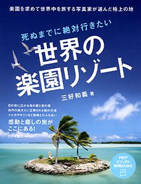

| PHP研究所電子書籍ベスト100 2014 PHP電子 | |
| PHP研究所 | |
| (2014) | |
PHP研究所電子書籍ベスト100
2014
PHP研究所 編
はじめに
2014年12月、PHP研究所の電子書籍の配信タイトル数が4000点を超えました。
販売数も伸び、電子書籍ユーザーが確実に増えていることを私たちも実感した一年でした。
PHP研究所は1946年に松下幸之助によって創設され、現在に至るまで多数の書籍を刊行してまいりましたが、2000年から電子書籍への取り組みを開始し、2015年で16年目となります。
2014年は電子書籍の年間リリース数が1197点、新刊から既刊まで幅広いジャンルの作品を送り出しました。
大きな特徴は、配信している電子書籍の大半がコミック等ではなく文字中心の作品であることです。文字中心の電子書籍の配信数は出版業界の中でもトップクラスと言えます。
この電子書籍は、そんなPHP研究所における、2014年の電子書籍売上ベスト100をご紹介するものです。
このランキングは大変興味深く、人気の新刊、1960年代刊の不朽のミリオンセラー、電子書籍限定作品（デジタルファースト）等、様々なジャンルの作品が登場し、電子書籍ならではのものとなっております
ぜひとも、このランキングからPHP研究所の電子書籍を俯瞰してみてください。そして興味を持たれた作品をご一読いただければより幸甚です。
2015年3月31日 PHP研究所 電子出版部
【本電子書籍について】
○本電子書籍に掲載したランキングは2014年1月から12月までのPHP研究所の全電子書籍販売ストアの売上を集計したものです。
○各ページ末の「電子書籍の詳細ページはこちら 」の「こちら 」の文字をタップまたはクリックすると、書籍の商品詳細ページに遷移します。
○本電子書籍中で一部、漢字が簡略体で表示される場合があります。
2014年 PHP研究所電子書籍
第1位
利休にたずねよ
山本兼一
2010年刊
おのれの美学だけで秀吉に対峙し天下一の茶頭に昇り詰めた男・千利休。その艶やかな人生を生み出した恋とは。第140回直木賞受賞作。
女のものと思われる緑釉の香合を肌身離さず持つ男・千利休は、おのれの美学だけで時の権力者・秀吉に対峙し、天下一の茶頭に昇り詰めていく。刀の抜き身のごとき鋭さを持つ利休は、秀吉の参謀としても、その力を如何なく発揮し、秀吉の天下取りを後押し。しかしその鋭さゆえに秀吉に疎まれ、理不尽な罪状を突きつけられて切腹を命ぜられる。利休の研ぎ澄まされた感性、艶やかで気迫に満ちた人生を生み出したものとは何だったのか。また、利休の「茶の道」を異界へと導いた、若き日の恋とは...。「侘び茶」を完成させ、「茶聖」と崇められている千利休。その伝説のベールを、思いがけない手法で剥がしていく長編歴史小説。第140回直木賞受賞作。解説は作家の宮部みゆき氏。
電子書籍の詳細ページはこちら
2014年 PHP研究所電子書籍
第2位
他人を攻撃せずにはいられない人
片田珠美
2013年刊
罵声を浴びせる人から、「いい人の仮面」を被り、密かに相手を陥れる人までさまざまなケースをとりあげ、その心理を精神科医が分析する。
暴言を吐く、支配したがる、けなして自信を失わせる、優しいようで水面下で工作している、一見目立たない人を含めて、あなたの周りにはとんでもない人が隠れているかもしれない。本書では、精神科医として「ターゲット」にされて、痛い目に遭った患者たちから聞いた、人を陥れる「攻撃欲の強い人」を事例で紹介。ターゲットの心をどんなふうに壊していくのか、その手法を取り上げて分析する。「攻撃欲の強い人」とはどんな人か。多くの場合、攻撃される側は、ターゲットが抵抗できないが、それは一体なぜなのか。何のためにそんなことをするのか。結果どんな影響を及ぼすのか。はたして、攻撃欲の強い人と、どう向き合い対処すべきか。本書で明らかにする。自分のために、人生を台無しにされないために――職場や家族に潜む「害になる人」の精神構造を知る！
電子書籍の詳細ページはこちら
2014年 PHP研究所電子書籍
第3位
道をひらく
松下幸之助
1968年刊
運命を切りひらくために。日々を新鮮な心で迎えるために――。人生への深い洞察をもとに綴った短編随筆集。40年以上にわたって読み継がれる、発行450万部超のロングセラー。
昭和43年の発刊以来、累計400万部を超え、いまなお読み継がれる驚異のロングセラー『道をひらく』。本書は、松下幸之助が自分の体験と人生に対する深い洞察をもとに綴った短編随想集である。これまで、どれほど多くの人が本書に勇気づけられ、また成功への指針としてきたことか。この本には、時代を超えて生き続ける不変の真理があるからである。もし失敗して落ち込んでいるのならば、「自信を失ったときに」「困難にぶつかったときに」「運命を切りひらくために」の項が、きっと立ち直る勇気を与えてくれるだろう。もし、経営で行き詰まってしまったら、「仕事をより向上させるために」「事業をよりよく伸ばすために」「みずから決断を下すときに」の項が、解決の方途を示してくれるはずである。業の成功者であり、それ以上に人生の成功者である松下幸之助であればこそ、その言葉には千鈞の重みがある。あらゆる年代、職種の人に役立つ、永遠の座右の書である。
電子書籍の詳細ページはこちら
2014年 PHP研究所電子書籍
第4位
「話す」「書く」「聞く」能力が仕事を変える！ 伝える力
池上彰
2007年刊
わかっているつもり、では伝わりません。伝えるために話すこと、書くこと、聞くことを徹底して考えたジャーナリストの究極の方法とは？
商談や会議、プレゼンテーションや企画書・報告書の作成、電話での交渉、メールでの連絡――ビジネスの現場で行なわれている日常業務。仕事の「できる」「できない」を左右するのは、意外とこうした基礎をしっかりやるかどうか。それには上司や部下、顧客とのコミュニケーションをいかに円滑にするかが鍵を握る。本書は「話す」「書く」「聞く」の3つの能力の磨き方を紹介。これができると自ずと成績・業績に結びつくもの。長年NHKの『週刊こどもニュース』のお父さん役を務めてきた著者（現在はフリージャーナリストとして独立）ならではの極意を伝授する。伝えることの難しさを身をもって経験しているだけに、ビジネスの現場でも十分応用が効く智恵が盛りだくさんである。相手を惹きつける、ビジネス文書を書く、文章力をアップさせるなど、本書の秘訣を習得すれば、仕事が楽しく、やりやすくなること間違いなしだ。
電子書籍の詳細ページはこちら
2014年 PHP研究所電子書籍
第5位
日本史の謎は「地形」で解ける
竹村公太郎
2013年刊
なぜ頼朝は狭く小さな鎌倉に幕府を開いたか、なぜ信長は比叡山を焼き討ちしたか......日本史の謎を「地形」という切り口から解き明かす！
養老孟司氏、推薦！
荒俣宏氏、推薦！河川行政に長年携わり、日本全国の「地形」を熟知する著者が、歴史の専門家にはない独自の視点（＝インフラからの視点）で日本史のさまざまな謎を解き明かしていく。なぜ京都が都になったか──都市繁栄の絶対条件元寇が失敗に終わった本当の理由とは何か──日本の危機を救った「泥の土地」なぜ信長は比叡山延暦寺を焼き討ちしたか──地形が示すその本当の理由関ヶ原勝利後、なぜ家康はすぐ江戸に戻ったか──巨大な敵とのもう一つの戦い赤穂浪士の討ち入りはなぜ成功したか──徳川幕府百年の復讐なぜ吉原遊郭は移転したのか──ある江戸治水物語なぜ江戸無血開城が実現したか──船が形成した日本人の一体感「地形」を見直すと、まったく新しい歴史が見えてくる！歴史に対する固定観念がひっくり返る知的興奮と、ミステリーの謎解きのような快感を同時に味わえる1冊。
電子書籍の詳細ページはこちら
2014年 PHP研究所電子書籍
第6位
家に帰ると妻が必ず死んだふりをしています。
K.Kajunsky/ichida
2011年刊
ネットで話題になったYahoo！ 知恵袋の伝説の質問「家に帰ると妻が必ず死んだふりをしています」がまさかのコミック＆書籍化！
家に帰ると妻が必ず死んだふりをしています。
どういうことなのでしょうか？ある時は血まみれである時は頭に矢が刺さり、またある時はダイイングメッセージで「かつお」と書きながら...妻が死んだふりをして夫を迎えるその真意は？『Yahoo！知恵袋』に投稿された質問は大反響を呼び各ネットニュースにもとりあげられました。ニコニコ動画ではこの質問にインスパイヤされたほぼ日P氏の楽曲が投稿され110万再生を超えています。シュールだけど可愛いボケをかます妻を愛情をもって突っ込み、時にはスルーする夫。そんな夫婦のやりとりを独特のシニカルな作風のichida氏がコミック化します。ブログには書かれていない新ネタ（？）も収録！ニヤリと笑え、ホロリと癒される1冊です。
電子書籍の詳細ページはこちら
2014年 PHP研究所電子書籍
第7位
さいふをなくした01 さいふをなくした
ドアラ
2014年刊
ドアラ（名古屋市在住）が連載エッセイに挑戦！
ドアラが名古屋市に出現して20年。今年、作家・ドアラ先生が再起動する――。 ドアラ（名古屋市在住）は、中日ドラゴンズのマスコットキャラクター。愛知県のみならず、全国から愛されるドアラ。つらくても、くるしくても、球場でいつも笑顔をたやさないドアラは、いつだって私たちを癒してくれます。 しかし、その笑顔の裏に、悲喜こもごもの日常が潜んでいることを我々は知りません――。 ドアラ出現20周年を記念して、2年ぶりに作家・ドアラ先生に執筆を依頼。
「さいふをなくした」と題して、全４回にわたる短編エッセイを連載。これまで私たちには見えなかった、ドアラの日々のくらしが紡ぎ出されます。 第１話、「さいふをなくした」では、ドアラがなんと大切なものをなくしてしまいます。その大切なものとは一体......？
そしてドアラをへこませた、謎の物体とは......？
「そのまんまじゃないか！」の声が続出の第１回！
電子書籍の詳細ページはこちら
2014年 PHP研究所電子書籍
第8位
東大生が書いた世界一やさしい株の教科書
東京大学株式投資クラブAgents
2011年刊
東大生が教えたら、難しい株式投資もこんなにわかりやすい！ 個性豊かな先生陣と、初心者生徒3人と一緒に、楽しく学べる株の教科書。
東大生が書いたら、難しい株式投資がここまでわかりやすくなりました！「株に興味はあるけど、入門書で挫折した」「文章が堅苦しくて読み進められない」......本書は、そんな人にオススメの株式投資入門講義です。これ以上ないくらいにやさしいこの本で、遊太くん、勤くん、彩ちゃんの3人の生徒と一緒に株を学んでいきましょう。教えてくれる先生方は、ちょっと陰のある金七先生、セクシーな紀香先生、筋肉マッチョな株レラ先生と、超個性派ぞろい。株の基礎からチャートの読み方、指標の使い方、株価に影響を与えるニュースの見方や新聞の読み方まで、必要な知識を楽しく身に付けることができます。さらに、リアルな銘柄選択、投資クイズなど、ずっと役立つ・使える情報が満載。この一冊を準備すれば、今日からあなたも個人投資家！
電子書籍の詳細ページはこちら
2014年 PHP研究所電子書籍
第9位
2035年の世界
高城剛
2014年刊
とてつもない変化は、世界のどこかでもう始まっている。今から20年後の「2035年」......、それは思ったほど遠くない未来である。
とてつもない変化は、世界のどこかでもう始まっている。今から20年後の「2035年」......、それは思ったほど遠くない未来である。本書は、クリエイター、あるいはDJとして、移動しながら世界で仕事をしている著者が、各国で最先端の研究機関、研究者、学者、技術者らと出会い、導き出した未来を描いた一冊。「死なない人間」「デザインされる子ども」「人工合成技術」「オミックス医療」「資本主義3.0」「空飛ぶ自動車」「未来の音楽」「ペタバイト」「リキッド化」「自分検索」......。一見、絵空事にも思えるキーワードの数々。しかし、それらは既に世界のいたるところで現実化、実用化に向けて動き始めている。著者は、貧富の差という二極化だけでなく、「生死」に関しても二極化される可能性を示唆している。では、私たちは20年後に向けて、今、何をすべきか。そのヒントは本書に収録した「100のキーワード」の中にある。
電子書籍の詳細ページはこちら
2014年 PHP研究所電子書籍
第10位
日本人はなぜ日本のことを知らないのか
竹田恒泰
2011年刊
「日本は世界最古の国」――誇るべきことなのに、なぜか学校では教えてくれない建国神話を紐解く。子どもに伝えたい「日本誕生の教科書」。
自分の国がいつできたのか答えられますか？学校が教えてくれない「世界最古の国」の奇跡を、明治天皇の玄孫にして、ベストセラー『日本はなぜ世界でいちばん人気があるのか』（PHP新書）の著者が、強い信念をもって語った意欲作。巻末の「子供に読ませたい建国の教科書」では、「日本ってすごい！」という思いが自然と湧いてきます。【内容】「建国記念の日はなぜ二月十一日なのか」「日本はいつどのようにできたのか」――世界中の国民が知っている自分の国の成り立ちを、日本人の多くは答えられない。初代天皇の存在は伏せられ、『古事記』『日本書紀』は非科学的として封印される。何より、日本が現存する世界最古の国家である事実を学校は教えてくれない。まるで誇りを持たせたくないかのような歪んだ歴史教育。戦争もなく統一を果たし、中国から独立を守り抜いた奇跡の歩みを紐解こう。世界でいちばん人気がある日本を、私たち自身が愛せるように。
電子書籍の詳細ページはこちら
2014年 PHP研究所電子書籍
第11位
自分を変える技術 「がんばっても給料同じ」なんてウソ！
おちまさと
2013年刊
分かっているのに、なぜ怠けてしまうのか？ 「やる気を出したい」「続けたい」と思った時に読み返したいヒントがここにあります。
「今日から変わろう！」という固い決意はなぜ３日間しか続かないのか？
多くの人を悩ますこの問題に、ソリューションを提供するのがこの作品です。厳しい環境からキャリアを開始して、夢や目標を達成し続け進化を止めない著者が、そんな自身の経験から、あなたの一度きりの人生を、もっと毎日を楽しくするためのコツを伝えます。アメーバのような変化力が求められる現代。柔軟に自分自信を「進化」させて行かなければ、成功はおろか現状維持すらままなりません。そんな時にあなたを邪魔する「怠ける心」や「がんばたってムダ」の気持ちは、きっと最後まで読んで頂ければ消えていると思います。「やる気を出したい」「続けたい」と思った時に読み返したいヒントがここにあります。
電子書籍の詳細ページはこちら
2014年 PHP研究所電子書籍
第12位
世界のエリートの「失敗力」 彼らが＜最悪の経験＞から得たものとは
佐藤智恵
2014年刊
一流大学のMBA入学資格にはなぜ「失敗から学んだ経験」があるのか。世界は完璧な人ではなく、転んでなお立ち上がる人を求めている。
ハーバード、スタンフォード、マッキンゼー、ＢＣＧ、ゴールドマン・サックス、グーグル、トヨタ自動車、ソニー、電通、三井物産、三菱商事......その貴重な実話から学ぶ！「あなたは失敗から何を学びましたか？」世界最高峰の組織では、この質問への回答が、あなたを評価する重要な要素となる。今、グローバルリーダーに最も求められるのが「失敗力」だからだ。本書では、トップクラスの経営大学院の授業と、世界で活躍する１２名の日本人エリートの実話から、身につけるべき「失敗力」の実情を探る。「大の大人が泣き出すほど厳しい『失敗シミュレーション』とは？」「華やかな経歴の人が、こんな挫折を乗り越えていたなんて！」......多くの驚きとともに、挑戦欲をかきたてられる内容だ。
電子書籍の詳細ページはこちら
2014年 PHP研究所電子書籍
第13位
日本はなぜ世界でいちばん人気があるのか
竹田恒泰
2010年刊
「もったいない精神」「日本食」「和み」――世界が猛烈な日本ブームに沸いていることを、いまこそ知ろう。北野武氏との対談も収録。
天皇の意味がよくわかる最強の日本論。マンガ･アニメが席巻し、世界はいま空前の日本ブーム。しかし理由はそれだけではない。食文化、モノづくり、日本語、和の心、エコ――あらゆる日本文化に好意が寄せられている。それなのに自分の国を愛せなくなったのはあまりにも悲しい。なぜ『ミシュランガイド』は東京に最多の星を付けたのか？
どうして「もったいない」が環境保全の合言葉に選ばれたのか？
「クール･ジャパン」の源流を探ると、古代から綿々と伝わる日本文明の精神、そして天皇の存在が見えてくる。いまこそ知っておきたい日本のすごさが一冊でわかる。なんだか自信が湧いてくる！【世界に愛される日本文化のキーワード】第一章「頂きます」／第二章「匠」／第三章「勿体無い」／第四章「和み」／第五章「八百万」／第六章「天皇」／終章「ジャパン･ルネッサンス」巻末付録として北野武氏との対談「日本は生活そのものが『芸術』だ」を収録。
電子書籍の詳細ページはこちら
2014年 PHP研究所電子書籍
第14位
「相対性理論」を楽しむ本 よくわかるアインシュタインの不思議な世界
佐藤勝彦
1998年刊
たった10時間で『相対性理論』が理解できる！ 「遅れる時間」「双子のパラドックス」などのテーマごとに、楽しく、わかりやすく解説。
ホーキング博士の難解な宇宙論がブームになったことは記憶に新しい。そんな難解な理論の代表格が、ホーキング理論の基礎でもあるアインシュタインの「相対性理論」ではないだろうか。
実は、相対性理論は彼がいなかったら成立しなかったというわけではない。その発表とともに世界の学者たちが「ああ、そうだったのか」と、直ちに理解したのである。別の見方をすれば、相対性理論は天才しかわからないものではなく、素直に考えればなるほどそうだったのかと誰でも思えるものなのだ。
本書は、従来の解説書と違い、数式をできるだけ使わず、イラストや図解を多用することで、スラスラと理解できる入門書。あなたをアインシュタインの不思議で謎に満ちた世界へと誘います。
全体を10章に分け、「アインシュタインの生涯」「遅れる時間の不思議」「双子のパラドックス」などのテーマごとに解説。楽しく読み進むだけで理解できるように構成された画期的な一冊。
電子書籍の詳細ページはこちら
2014年 PHP研究所電子書籍
第15位
東大首席弁護士が教える超速「7回読み」勉強法
山口真由
2014年刊
東大法学部を首席で卒業し、現在弁護士として活躍する著者が、ライバルに差をつけるための本当に身につく勉強のハウツーを紹介。
東大を首席で卒業するようなトップエリートは、いったいどんな勉強をしてきたのか――。一般の人とはもともとの頭の作りが違うのか、努力の量が違うのか、みんなが知らない暗記のコツを知っているのか。東大法学部を首席で卒業し、官僚を経て弁護士、テレビコメンテーターなどとして活躍する著者が、どのような勉強法を実践してきたのか解説。「勉強は決して楽しいものではない」と著者は言い切ります。知識を学び、自分のものにするには「努力」が必要です。勉強という作業は極めて地味で、時には退屈、多くの場合は苦痛でさえあるのです。そんな作業を継続してこられた大きな要因は、自分に合った勉強法を確立できていたから。勉強法さえ確立できれば、知識の獲得は断然楽になります。本書では、その具体的な勉強法として、誰でも実践可能な「本を7回読む」というシンプルな方法を中心に、著者が編み出した勉強のコツをたっぷりと紹介しています。
電子書籍の詳細ページはこちら
2014年 PHP研究所電子書籍
第16位
戦略課長
竹内謙礼/青木寿幸
2014年刊
銀行から出向してきたロボットの取締役と新規事業を任された美穂。二人は無事に事業を成功させられるのか？ おもしろ過ぎる投資学の本。
事なかれ主義で経営が悪化した上場企業に、メインバンクから取締役としてロボットが出向してきた!?予算5000万円の新規事業を任された新米課長・道明美穂は、ロボット取締役からさっそく事業計画書の作り直しを命じられるが......。はたして道明はこの事業を成功させ、業績を上げることができるのか、さらに恋人・吾郎との恋の行方は？「新規事業を成功させる3つの戦略」「ポートフォリオを使えば、事業リスクは減らせる」「事業を拡大するお金を上手に調達する方法」「賃料を上げて不動産投資を成功させる方法」「戦略を理解できれば、人生の勝者になれる」など、事業計画書や経営戦略の立て方から株や不動産投資の基本まで、投資のルールのすべてがわかる！
先が気になる、笑いと涙の投資戦略ノベル。運に任せた人生は、努力の効率が悪い。成功するために必要な知識を得て、戦略を立て、合理的に決断し、実行すれば人生は変わる！
電子書籍の詳細ページはこちら
2014年 PHP研究所電子書籍
第17位
さいふをなくした02 ほねがおれた
ドアラ
2014年刊
ドアラ（愛知県在住）の連載エッセイ第２話！
ドアラ（愛知県在住）出現から20年を記念した、連載エッセイの第２話。ドアラの笑顔の裏にある、悲喜こもごもの日常が見えてきます――。第２話、「ほねがおれた」では、世間を騒然とさせた「ドアラ骨折事件」の裏側が見えてきます。何も気が付かず、酒を飲むドアラ。医師からの非情な宣告。東京から届いた謎の栄養ドリンク。刻々と迫る最終戦。そして、絶対にバク転を失敗できない状況に追い込まれたドアラはその時――。緊迫感あふれる第２話！【第２話
目次】・ブロークンボーンズ・そして、病院へ・海外への配慮・治りませんでした・折れてもオフ・マジですマジ・おまけ
ドアラ謎写真コーナー
電子書籍の詳細ページはこちら
2014年 PHP研究所電子書籍
第18位
「量子論」を楽しむ本 ミクロの世界から宇宙まで最先端物理学が図解でわかる！
佐藤勝彦
2000年刊
素粒子のしくみから宇宙創生までを解明する鍵となる物理法則「量子論」。本書ではそのポイントを平易な文章と図解を駆使して徹底解説。
とても興味があるけれど、むずかしくて理解できない......そんな代表的なものが、アインシュタインが提唱した「相対性理論」だろう。ところが、現代物理学にはその相対性理論よりも難しく、奇妙で、なおかつとても面白い理論がある。それが「量子論」。一番身近な例をあげると、最近はほとんどの人が持っている携帯電話やパソコンのもっとも重要な部品ともいえる半導体チップの中を支配している法則である。こればかりではなく、素粒子などのミクロの世界に適用されるもので、人などの遺伝子など生物の構造や進化、そしてマクロの極限である宇宙の創生までを解明するとされている。本書は、その量子論のポイントが一目で理解できるように、図やイラストを多数使って初心者向けにわかりやすく解説した格好の入門書。最先端物理学の不思議な世界を手軽に味わうことができる。監修は宇宙物理学を世界的にリードしている東京大学の佐藤勝彦教授。
電子書籍の詳細ページはこちら
2014年 PHP研究所電子書籍
第19位
子どもの心のコーチング 一人で考え、一人でできる子の育て方
菅原裕子
2007年刊
問題点を引き出し、自ら解決させ成長を促すコーチング。その手法を「子育て」に応用し、未来志向の子どもを育てる、魔法の問い掛け術。
子どもをよい子に育てたい――。そう考えるあまり、声をかけ、世話をやきすぎて、依存心の強い、自立できない子どもが増えているといいます。しかし、子どもの将来を思うのなら、自分で考える力、周りの人とうまくやっていける本物の「生きる力」を身につけさせるのが親の務めです。本書では、コーチングの技術を応用して、子どもの内なる能力を引き出し、子どもが自分で考え、答えを出せる子育て法を紹介します。「親は子どもをサポートし、才能を花開かせるコーチ」「子どもに教えたい、"愛すること""責任""人の役に立つ喜び"」「幸せ気分でするしつけ」「あなたの『きき耳』チェック」など、親がコーチとしてのあり方を学び、親自身が成長することによって、子どもの「生きる力」も育まれていくのです。ワークショップやPTA主催の講演会で多くの親から支持を得ている子育てプログラム「ハートフルコミュニケーション」をわかりやすく解説した入門書。
電子書籍の詳細ページはこちら
2014年 PHP研究所電子書籍
第20位
ウェブとはすなわち現実世界の未来図である
小林弘人
2014年刊
なぜ「社会はウェブをコピーする」のか。「フリー」「シェア」そして「オープン」......インターネットの潮流を知れば未来が読み解ける。
。時間と空間を超えてつながる新しい人間関係のもとで、ハイパー資本主義以前にみられた贈与経済を彷彿させる「シェアリング・サービス」が勃興している。さらに「社会がウェブをコピーする」なかで、絶対に安泰と思われていた事業が思いもよらない競合に浸食され、組織づくり、イノベーションの作法、教育までもが根本から変化している。はたして「昨日の常識が通じない時代」に私たちが身につけるべき「視座」とは何か。人間はウェブの力を味方にできるのか......。フェイスブックの歴史的意味からウェアラブルコンピュータによるパラダイムシフト、日本企業が行き詰ったほんとうの理由、そうした混沌の先にある未来までをも一つの線上で論じきった、渾身の一作。
電子書籍の詳細ページはこちら
2014年 PHP研究所電子書籍
第21位
「食べない」健康法
石原結實
2012年刊
「食べないと健康に悪い」はもう古い！ いまは「食べないから健康」が常識。医師やスポーツ選手が実践する超少食健康生活を紹介する。
現代人の食べすぎが病気を増やしている！
ガン、脳梗塞、心筋梗塞、糖尿病、通風などの病気は、1日2食以下の「少食生活」で改善できる。本書は、断食が体に良い根拠から、その具体的な実践法、「飲酒はOK？」「いつまで続けるべき？」などの素朴な疑問までを解説。永年、断食指導を行なってきた著者が明かす「少食健康本」の集大成。「健康のために」と1日3回食べている方は必読！石原式「健康食」（朝）下記のどれか○食べない。○お茶に梅干し。○黒砂糖入り生姜紅茶1～2杯。○人参･リンゴジュース1～2杯。○生姜紅茶1～2杯と人参・リンゴジュース1～2杯。（昼）下記のどれか○ネギと七味唐辛子をしっかりふりかけたそば（とろろ、ワカメ、ざる）。○ネギと七味唐辛子をしっかりふりかけた具だくさんのうどん。○タバスコをふりかけたピザやパスタ。・○ごはんや弁当ならよくかみ、腹八分以下に。（夕）○アルコールを含め、何を食べても可。
電子書籍の詳細ページはこちら
2014年 PHP研究所電子書籍
第22位
大資産家になるためのアジア副業マニュアル 1万円から実現できる人生改革
澤木恒則
2014年刊
港区、マニラ、セブ、バンコクに住居を構え、アジアでのビジネスに成功した著者が、これから10年アジアで大富豪となる秘密を伝授！
今こそ企業も個人もアジアの風に乗るべき時。本書は正に成功のカギを示した必読の書だと思う。――ソニー元社長
安藤国威。米プレデンシャル・フィナンシャル日本法人設立に30歳で参画し、36歳で取締役。44歳でフィリピン現地法人の社長、その後東京海上グループやソニー生命保険を渡り歩いた著者。生保業界のエリート営業管理職が、自身の体験をもとに、アジアで稼ぎ、大資産家となる方法を伝授！内容例を挙げると、語学力で飛躍するアジアの若者vs.陳腐な内容を日本語のみでしか話せない日本の若者
人口ボーナスで見る世界、沸騰するアジア
収入源と運用、リスク分散の考え方―マネー力幼稚園児の日本
なぜ、三カ国に住居、資産をもつことが有効なのか
合法的運び屋となるために
移動は経費ではなく投資である
住む場所が変われば人生は劇的に変わる
等々。アジアビジネスのチャンスをつかむための一冊！
電子書籍の詳細ページはこちら
2014年 PHP研究所電子書籍
第23位
戦略プロフェッショナルが選んだ フレームワーク115
丹生光
2013年刊
数々のトップ企業を指導した「戦略のプロ」が、有名なものからオリジナルのものまで、使えるフレームワーク115個と活用法を説く！
部署から人員が削減されていくのに、「数字目標を達成しろ」「売れる商品をつくれ」「資料を出せ」「期日を守れ」。一人で二人分、三人分の仕事をこなすことが求められていく――。どうにかして、仕事を効率化したい！
そんな多忙なビジネスパーソンを救うべく、25社以上の超有名上場企業を中心に支援してきた戦略のプロが、ついに書籍デビューしました。
「SWOT分析」「4P・4C」「ロジックツリー」「PDCA」「7S（セブンエス）」「AIDMA（アイドマ）」「ブレイクスルーメソッド」......。よく聞くけど意外と知らない、最強の思考ツールをこの1冊で網羅しました。さらに、あらゆる業務を加速するために考え抜いたマル秘ツールも初公開。
問題解決力、分析力、戦略力、計画力、提案力、企画開発力、ブランド力、経営力を高めるための、前代未聞、トータル115件のフレームワークがこの1冊に収録！
これらのフレームワークを使えば......→自分の考えがサクサク整理され、深められます！→思考が共有され、スムーズにコミュニケーションできます！→会社の戦略が分かりやすく図式化され、分析や戦略立案ができます！
電子書籍の詳細ページはこちら
2014年 PHP研究所電子書籍
第24位
世界十五大哲学
大井正/寺沢恒信
2014年刊
佐藤優氏が自著の中で「この本のおかげで哲学の入り口を間違えずに済んだ」と紹介し、現在入手困難となっている哲学入門の名著を復刊。
作家・元外務省主任分析官の佐藤優氏が、自著のなかで「説明が丁寧でわかりやすく、この本のおかげで哲学の入り口を間違えずに済んだ」と紹介。以来、入手困難な稀覯書として注目を集めていた名著を復刊。ソクラテス、プラトンから、デカルト、カント、ヘーゲル、そしてマルクス、サルトルまで。哲学史に多大な影響を与えた15人の大哲学者の思想、生涯、著作、時代背景を平易に解説。西洋哲学の歴史がわかる「第一編
哲学思想史」や、巻末の用語解説も充実。教養のベースとなる哲学の基礎知識と思考法が1冊で身に付く、哲学入門書の決定版！
また、知る人ぞ知るロシアの哲学者・チェルヌィシェフスキーについて1章をさいて解説しているという点でも貴重な1冊である。「本書では15大哲学者の個性をつうじて、その前後とその背後の時代思潮をつかむことができるように留意した。こうすることによってはじめて、15人のべつべつな哲学者としてではなくて、2000年の哲学史を代表する15の偉大な哲学体系として理解することができよう。さらに、哲学というものの概要、哲学の短い歴史、哲学上の重要用語の解説をつけた。これによって、もともと哲学には関心はあるけれども、かんたんに哲学問題に深いりできなかった人々に道をつくったつもりである」（本書「序」より抜粋）「実は、この本は、私が初めて買った哲学書で、その後も人生の伴侶となっている本だ。あちこち線を引いて、書き込みをしたので、ぼろぼろになってしまった。今回、解説を書くために本書を再読した。現在の水準で考えても、素晴らしい入門書と思う。思いつきを、筋道をたてて整理して、きちんとした考えにまとめるためには、哲学的な基礎訓練が不可欠だ。
電子書籍の詳細ページはこちら
2014年 PHP研究所電子書籍
第25位
1日1分からはじめる 速読勉強術
宇都出雅巳
2010年刊
たった1分のスキマ時間が、貴重な勉強時間に変わる！ 難関資格に短期間で合格した著者が考案した速読術「高速大量回転法」を公開。
「スキルアップの勉強をしたいのに、忙しくて時間が取れない」
と諦めていませんか？
難関資格に短期間で合格した著者が編み出した強力なメソッド――それが、「高速大量回転法」を使った速読です。本書は、「目次記憶法」「早読み法」「空間法」「フォルダ法」など、忙しい人でもスキマ時間を活用することですぐに始められるテクニックを紹介。あなたの勉強や読書に劇的な変化をもたらす一冊です。
電子書籍の詳細ページはこちら
2014年 PHP研究所電子書籍
第26位
さいふをなくした03 からだをいたわる
ドアラ
2014年刊
ドアラ（名古屋市在勤）の連載エッセイ第３話！
ドアラ（名古屋市在勤）出現から20周年記念連載エッセイの３回目！
この第３話「からだをいわたる」では、毎年のように疾病に悩まされたドアラが、その経験から見出した独自の「健康法（？）」が明らかになります。休息の大切さを知るドアラが、休憩中にある選手に声をかけられ......？
2011年に苦しめられた下半身の病気のその後は？
ドアラ流の酒の飲み方とは？
そして、ドアラの食生活はいま!?
など、ドアラの体への繊細な気づかいが見えてくる第３話！【第３話
目次】・力の限り・戦士の休息・おなかを大切に・お湯割り健康法・至高のメニュー・健康ドアラ体・おまけ
ドアラ謎写真コーナー
電子書籍の詳細ページはこちら
2014年 PHP研究所電子書籍
第27位
中国の大問題
丹羽宇一郎
2014年刊
中国に媚びるのではなく、中国を利用するために――大使として、実業家として中国全土を隈なく見てきた末に見通せる中国の現実を報告。
丹羽前大使を「親中派」と決めつけてはいけない。氏の中国論はきわめて誠実でまっとうである。（社会学者、『おどろきの中国』著者・橋爪大三郎）世界一の貿易額をかさに着て、中国が驕りを見せはじめた。もはや日本なしでもやっていけると言わんばかりに。経済的に勢いづいてはいるが、その内実は数々の難問に直面している。拡大する都市と農村の経済格差、国有企業の杜撰な経営体質、テロや暴動が絶えない少数民族問題、要人たちの汚職と不正蓄財......。そうした中国国内の真実は、報道を通じて知られているようでいて、意外と情報は流れていない。感情論だけが先走り、隣国を正しく見据えられていないのではないか。この状況に危機感をもった前中国大使が、ついに沈黙を破る。商社マンとして30年、大使として2年半。政財界トップの性質や思惑、はては国境近くの庶民や少数民族の生活実態まで、「病める中国」の姿をつぶさに見つめた迫真のレポート。
電子書籍の詳細ページはこちら
2014年 PHP研究所電子書籍
第28位
「知的野蛮人」になるための本棚
佐藤優
2014年刊
何者かに騙されない、本物の教養を身につけるための読書案内。世の中の出来事を、自分の頭で読み解くコツを、当代随一の読書家が伝授。
1人の人間の能力や経験には限界がある。この限界を突破する最も効果的な方法が読書だ。著者は、「読書によって教養をつけるためのコツがある。数学で分数が理解できていない人が、微分、積分に関する本を読んでも、絶対に内容を理解することはできない。それと同じように政治や経済、あるいは恋愛についても、本には読む順番がある」と言う。本書では、当代随一の読書家である著者が、「意味のある読書とは何か」「詐欺師の視点に学ぶ」「格差の本質を知る」「『テロ』を起こす人々とは」「オバマ大統領の戦略」「北朝鮮をめぐる情報戦」など、57の重要テーマについて「真っ先に読むべき2冊」を厳選して紹介。この2冊をきちんと読んでおけば、自分の頭で現在起きている出来事を読み解くことができるようになる。佐藤流の「知的野蛮人」になるための「書店活用法」「選書術」「読書法」を開陳した、巻頭・巻末の文庫版＜紙上特別講義＞も必読！
電子書籍の詳細ページはこちら
2014年 PHP研究所電子書籍
第29位
さいふをなくした04 ふつうのドアラ
ドアラ
2014年刊
ドアラ（中日ドラゴンズ）の連載エッセイ、堂々の完結！
ドアラ（中日ドラゴンズ）出現から20周年記念連載エッセイ、ついに最終話！
第４話「ふつうのドアラ」では、ついにドアラの心のうちが明らかになっていきます！お立ち台のボード破壊事件の真相。年俸大幅ダウンの裏側で、ドアラが決して譲らなかったこと。高額なカレンダーを売り歩くドアラの心中。そして、ドアラが繰り返す「ふつう」の意味とは......？堂々の連載フィナーレ！【第４話
目次】・ドアラさんは心配性・ボード破壊事件・ペイント・イット・ホワイト・律儀な男・高額商品・心優しき人・不変のドアラ・おまけ
ドアラ謎写真コーナー
電子書籍の詳細ページはこちら
2014年 PHP研究所電子書籍
第30位
なぜかすべてうまくいく 1％の人だけが実行している45の習慣
井上裕之
2013年刊
人生がうまくいく人、いかない人の差とは何か──。セラピストとしても活躍する歯科医が6万件の人生相談を経てたどりついた結論とは？
なぜかはわからないけど、やることなすこと全部うまくいく──。そんな「すべてがうまくいっている1％の人」と、「何かがうまくいっていないその他99％の人」の違いはどこにあるのか？本書では、両者を分ける「45の分岐点＝ほんのわずかな習慣の違い」を、歯科医師、セラピスト、コーチとして6万人以上の悩みに接してきた著者が徹底解明。
電子書籍の詳細ページはこちら
2014年 PHP研究所電子書籍
第31位
成功のための未来予報（きずな出版） 1年後の君は何をしているか
神田昌典
2014年刊
お金がなくなる! ? 会社がなくなる! ? 制約がなくなる! ? いま想像しているよりも、現実はもっと早く動いていく。
お金がなくなる!
?
会社がなくなる!
?
制約がなくなる!
? いま想像しているよりも、現実はもっと早く動いていく。 神田昌典が、栃木県宇都宮市白楊高等学校の全校生徒900名の前で語った90分。 著者が語る"これからの10年で激変していく未来"に、ワクワクが止まりません。
未来を担う高校生たちに、わかりやすい言葉で語った"7つの未来予報"。 高校生のみならず、ぜひ知っておきたい内容となっています。
電子書籍の詳細ページはこちら
2014年 PHP研究所電子書籍
第32位
「一体感」が会社を潰す 異質と一流を排除する＜子ども病＞の正体
秋山進

2014年刊
「感情的な議論」「身内のルール優先」「自社にしかわからない言葉を使う」......「子どもの論理」ばかりで動く組織に警鐘を鳴らす。
本書は、25年以上にわたり、30社以上の組織に経営改革のための助言をしてきた組織コンサルタントが、社会経済の変化とキャリアパスに潜む問題から、この重篤な病気を喝破する。そして、大人の組織が備えるべき3つの条件と、個人が一流の仕事人になるための10の戦略を説く。実は、意識の高い経営者や人事担当者は、うすうすこの病気に気づいている。しかし、対症療法しか行われない。なぜなら彼らにとって、部下や社員は未熟な子どものままの方が、都合がいいからだ。一見して、温かく居心地のよい職場で働く人こそ、危ない。＜感染＞を恐れる優秀な人材の逃亡は、もう始まっているのだ。幼稚な組織と心中しないために、一刻も早く読むべき一冊。
電子書籍の詳細ページはこちら
2014年 PHP研究所電子書籍
第33位
家に帰ると妻が必ず死んだふりをしています。 3
K.Kajunsky/ichida
2013年刊
死んデレ妻とスルー旦那のほっこり生活を綴った大ヒットシリーズのファイナル。死んだふりの真相は果たして明らかになるのか？
どういうことなのでしょう...家に帰ると妻が必ず死んだふりをしています。シリーズ累計まさかの15万部突破！妻の死んだふりの真相がついに!?死んだふりの"新作"はもちろん、ホームパーティーで妻があんな姿で登場!?の「水着と妻」、チョコレートのありかは"黒い犬に聞け"？「バレンタインデーと妻」、行ってなかった！...「新婚旅行と妻」などニヤリと笑えて、ホロリと癒されるエピソードが満載です。そして、遂に妻の死んだふりの真相が明らかに......?!
シリーズ完結の第3弾です！気になる内容は...ドアを開けたら...「水着と妻」（新規描き下ろし）バブルと寝た女？...「バブルと妻」突如かかってきた電話に...「オレオレ詐欺と妻」（新規描き下ろし）もっと幸せになりたい！...「快適な生活と妻」（新規描き下ろし）人見知りなのに？...「パーティーと妻」（新規描き下ろし）電気代の高さに驚いた妻の秘策...「節約と妻」（新規描き下ろし）バレンタインデーの戦い？...「バレンタインデーと妻」（新規描き下ろし）当てる気マンマン？...「宝くじと妻」東京に大雪...「雪の日と妻」（新規描き下ろし）妻と実家で...「父と妻」（新規描き下ろし）蟲嫌いだけどトカゲは...「トカゲと蟲と妻」特別な日に妻は...「誕生日と妻」（新規描き下ろし）行ってないハネムーン...「新婚旅行と妻」（新規描き下ろし）ネコがいる生活って...「ネコと妻」（新規描き下ろし）生まれかわったら...「輪廻転生と妻」（新規描き下ろし）巻末にはK.kajunsky氏の文章が特別収録！15編の漫画＋αでお贈りします！
電子書籍の詳細ページはこちら
2014年 PHP研究所電子書籍
第34位
日本人はいつ日本が好きになったのか
竹田恒泰
2013年刊
「自分の国がいちばん」とやっと素直に僕らは言えた――刷り込まれた「日本嫌い」から解き放たれようとしている日本人。戦後の呪縛がなぜいま？ 若者たちが誇りと自信を取り戻せば日本の前途は輝きわたる。
「あなたは日本のことが好きですか?」。そう問われて「日本のことが好きだ」と言える日本人はいまや少なくないだろう。だが、ほんの少し前の時代を思い出してほしい。「愛国心」と口にしただけで「ナショナリズム」「右翼」という言葉が返されなかっただろうか。「日本はダメだ」。メディアや評論家はそう繰り返し、人びとは無意識に「日本嫌い」を刷り込まれた。どこかで自国が素晴らしい国だ、と気付いていたにもかかわらず。
他国を見渡せばどうだろう。米国人も、中国人も、すべからく人びとは自分の国を愛し、その国民であることに誇りを持っている。そのなかで、どうして日本だけが「日本が好き」ということすら、言うことが憚れる社会であったのか。竹田氏は言う。「それは、日本を愛することが禁止されたからです。戦争に負けるというのは、そういうことなのです」。
先の大戦後、日本人の力を恐れたGHQはどのように、わが国を骨抜きにしていったのか。「百年殺しの刑」とも称される恐るべき政策や、GHQの意図を汲んだ日教組の「戦後教育マニュアル」の正体を知れば、戦慄を覚えない人などいないだろう。当時の資料を丹念に読み込みながら、本書は「日本人が日本を愛せなくなった理由」を突き止めていく。
一方で、まさに日本の手足を縛る「日本国憲法」をどう考えればよいのか。憲法九条の問題点を痛烈に指摘しながらも、その憲法のなかに竹田氏は「国体の護持」を見る。目下、国家的な議論が巻き起こりつつある憲法改正の論点を知れば、どのようにそれを改正すべきか、そこで尖閣諸島・竹島において日本の領土を侵食する中国・韓国との関係がどう変わるか、というシナリオも見えてくるはずだ。
そしていま、私たちはやっと「自分の国がいちばん」と素直に言えるようになった。それはなぜだろう。「日本人はいつ日本が好きになったのか」。その謎を解き明かしながら、人びとが当たり前のように愛国心を持ち、自分の国に誇りを感じるようになった日本の未来を竹田氏は描き出す。「国を愛する」とはどういうことか。その根源的な問いに答えつつ、すべての日本人に勇気を与える一冊。
電子書籍の詳細ページはこちら
2014年 PHP研究所電子書籍
第35位
日本史の謎は「地形」で解ける【文明・文化篇】
竹村公太郎
2014年刊
『日本史の謎は「地形」で解ける』第2弾。前作同様、ミステリーの謎解きの快感と、固定概念がひっくり返る知的興奮が味わえる一冊。
荒俣宏氏、驚嘆！
「地形で読み解けば、全地球の文明・文化が理解できる。第2弾は古代エジプトの謎まで！」養老孟司氏、激賞！
「なぜ日本は世界一の長寿国になれたか──。その問いを解く鍵が『大正10年』にあったとは！」河川行政に長年携わり、日本全国の「地形」と「気象」を熟知する著者が、人文社会分野の専門家にはない独自の視点（＝インフラからの視点）で、日本の歴史・文明・文化の様々な謎を解き明かす。なぜ江戸は世界最大の都市になれたかなぜ家康は「利根川」を東に曲げたかなぜ日本は欧米列国の植民地にならなかったか「小型化」が日本人の得意技になったのはなぜか日本将棋はなぜ「持駒」を使えるようになったか日本人の平均寿命をV字回復させた意外な人物とは？「地形」を見直すと、まったく新しい日本史・日本文化が見えてくる！
ベストセラーとなった前作『日本史の謎は「地形」で解ける』同様、定説がひっくり返る知的興奮と、ミステリーの謎解きのような快感を同時に味わえる1冊。古代エジプトのピラミッド建設の謎に挑んだ「番外編（第17章・18章）」も必読。
電子書籍の詳細ページはこちら
2014年 PHP研究所電子書籍
第36位
家に帰ると妻が必ず死んだふりをしています。2
K.Kajunsky/ichida
2012年刊
『Yahoo！知恵袋』に投稿された伝説の質問が再びまさかの漫画化！ ちえさん＆旦那さんのシュールだけどほっこりな生活を描く！
どういうことでしょう？
家に帰ると妻が必ず死んだふりをしています。どういうことでしょう？
「Yahoo！知恵袋」の伝説の質問、まさかのコミック化第2弾！衝撃のコミック化から約1年。あの不思議妻・ちえさんがリターンズ！ニヤリと笑えてホロリと癒される。死んデレ妻とスルー旦那のほっこり夫婦生活はまだまだつづきます。今回の内容は...ちえさんの新作？...「未来人妻」／旦那さんが垣間見たちえさんとは？...「インフル旦那」／ちえさんの意外な身体能力...「ランニング夫婦」／浴衣姿のちえさんは黙っていれば...「花火妻」／クリスマスは合宿です！...「クリスマス妻」／不思議妻の友人は不思議ちゃん...「妻の友人」／岐阜に義父を訪ねて...「ギフへのあいさつ」／幸せの証...「笑顔妻」など全16編オールコミックでお贈りします！
電子書籍限定特典！「さいごまで読んだら四コマ漫画がありました」
未公開の書き下ろし収録です！
電子書籍の詳細ページはこちら
2014年 PHP研究所電子書籍
第37位
伝わる・揺さぶる！ 文章を書く
山田ズーニー
2001年刊
仕事で受験で恋愛で。小論文指導のエキスパートが、想いを伝え、相手を動かし、望んだ結果を出すための、本当に役立つ文章術を伝授。
お願い、お詫び、議事録など、私たちは日々、文章を書いている。どんな小さなメモにも、そこには読み手がいて、目指す結果がある。ではそのような場面で、どうしたら誤解されずに自分の思いを伝え、読み手の気持ちを動かすことができるのだろう？著者は長年、高校生の小論文指導に携わり、現在は糸井重里氏のサイト『ほぼ日刊イトイ新聞』で「大人のための小論文教室」を連載し人気を博している。本書では「意見」「望む結果」「論点」「読み手」「自分の立場」「論拠」「根本思想」の七つの視点から、よい文章を書くための戦略をアドバイス。「自分の意見が見つからないときは、小さな問いを立ててみる」「テーマと論点の違いを意識する」などのユニークなノウハウを、具体的な文例を紹介しながら、解説していく。単なる文章のテクニックをこえ、自分の頭で考え他者と関わることの痛みと歓びを問いかける、コミュニケーションの本質に迫る一冊である。
電子書籍の詳細ページはこちら
2014年 PHP研究所電子書籍
第38位
会計天国（PHP文庫）
竹内謙礼/青木寿幸
2013年刊
突然、事故死した北条。そこに現われた黒スーツ姿の天使・Kが提案した現世復活のための条件とは？ 今度こそ最後まで読める会計ノベル。
突然、事故死した経営コンサルタントの北条。そこに現われた黒スーツ姿の天使・Kが提案したのは、現世に復活するチャンスだった。ただし、人生崖っぷちの5人を、会計ノウハウを使って幸せにするという条件付で......。その5人とは、黒字続きなのに給与と家賃が払えないアパレル会社の元アイドル社長。アニメグッズを販売する直営店ビジネスが大コケして株価が急降下したオタク社長。親が買収した子会社で粉飾決算が発覚した経理担当の娘。決算書が読めないのに「売上至上主義」で出世できた大手専門商社のやり手部長。多角化経営に失敗して資金繰りに行き詰った青年実業家（実は娘の婚約者）。北条は追い詰められた彼らを救い、現世に戻って娘の結婚式に出席することができるのか――。初心者でも「財務3表」が読めて使えるようになる。仕事で役立つ決算書＆会計知識が満載。
電子書籍の詳細ページはこちら
2014年 PHP研究所電子書籍
第39位
池上彰の「日本の教育」がよくわかる本
池上彰
2014年刊
いじめ、体罰、学級崩壊、ゆとり教育......日本の学校はどうなっている？ 教育制度の歴史から安倍政権の教育改革まで"池上流"親切解説！
安倍政権は「教育再生」を経済再生と並ぶ最重要課題に掲げ、「教育委員会制度の改正」「道徳の教科化」「6・3・3・4制の見直し」など、戦後教育の大転換といってもいいような改革を進めようとしている。その善し悪しを見極めるためには、教育制度に関する基礎知識が欠かせない。そこで本書では、学校教育の歴史や現状を池上氏がわかりやすく解説。「教育委員会」って何のためにあるの？「ゆとり教育で学力低下」とは言えない教員免許がなくても校長にはなれる公立の小中学校では50代の先生が最も多い子どもの6人に1人が「貧困」状態にある近い将来、「英語は小学校3年生から」になる？「東京教育大学」が存在しない意外な理由公立も中高一貫校が人気給食費「未納」問題はどうなった？学校で教わらない「日教組vs.文部省」の戦後史安倍政権の「教育再生」で何が変わるの？......etc.目からウロコの池上流解説で、あなたも一気に「教育通」！「日本の将来を考えるうえで、『教育が重要だ』と考えている人は多いと思います。にもかかわらず、教育改革に注目が集まらないのは、ひとえに、『わかりにくいから』ではないでしょうか。たとえば、『教育委員会』という名前は聞いたことがあっても、何をするための組織なのか、誰が委員なのか、といったことを正しく理解している人は少ないでしょう。日本の教育に、どんな歴史があって、どんな問題を抱えているか、まるごと知ってもらおうと考えて、この本をまとめました」（本書「はじめに」より抜粋）
電子書籍の詳細ページはこちら
2014年 PHP研究所電子書籍
第40位
斎藤一人 天が味方する「引き寄せの法則」
柴村恵美子
2014年刊
人間関係が良好で、お金も集まる人には共通点がある。日本一の高額納税者・斎藤一人氏から教わった人間関係が改善しお金が自由に手に入る法。
人間関係がとても良好でお金に困らない人、何をやってもうまくいく人には共通点があります。それはいつも「エネルギーに満ち溢れている」ということ。いいエネルギーを発する人には、いい人が集まってきます。いい人が集まってくると、いいことが自然に引き寄せられれるのです。本書は斎藤一人氏の一番弟子が明かす、いつも「エネルギーに満ち溢れている人」になる方法。いつも「エネルギーに満ち溢れている人」になるには、いつも上機嫌でいること。いつも上機嫌でいる人は、いつも楽しいを考えています。「あんなことできたら楽しいなあ」「こんなことできたらみんな喜ぶだろうな」。楽しいことを考える人には、どんどん人が集まってきます。人が集まるところにお金も運も引き寄せられます。人生を変えたいのになかなか変わらないと思っているあなたにぜひ読んでほしい一冊。
電子書籍の詳細ページはこちら
2014年 PHP研究所電子書籍
第41位
語られざる中国の結末
宮家邦彦
2013年刊
急減速する経済成長の一方で、軍拡をやめない中国。来るべき米中「東アジア戦争」の結末を読み解き、日本のとるべき戦略を大胆に提言。
「米国・中東も知る宮家氏の複眼的な分析力を信頼している」......内閣総理大臣
安倍晋三本書は「伝説の外交官」といわれた著者がものした初の外交評論である。経済成長とともに未曾有の規模で軍拡を続け、周辺国を脅かす中国。しかしそもそもなぜ、中国は沖縄の領有権にまで触手を伸ばし、「第一、第二列島線」なる概念で、米国の影響力を排除しようとするのか。著者はそこにアヘン戦争以来、「西欧文明の衝撃」から逃れられない巨大国家のトラウマをみる。いま中国が地球規模で米国と張り合わずとも、ユーラシア大陸の東半分と西太平洋で勢力圏を回復できればよい、と考えるなら、東アジア、西太平洋における米中衝突の可能性は消えない、というのがその見立てだ。すでに目にみえない「サイバー戦」というかたちで衝突は始まっている。戦線が拡大し、米中が正面から激突する「第二次東アジア戦争」が起こったとき、その敗者はどちらになるのか。その後、中国はいかなる変容を遂げるのか。そこで描かれるのは「中国統一・独裁温存」から「中国漢族・少数民族完全分裂」という7つの精緻なシナリオだ。著者はいう。「東アジアのパワーシフトを強かに生き残り、新たなる国際秩序の主導権をわが国が握ったとき、真の意味で第二次大戦は『歴史』になる」。はたして日本はこの変化を千載一遇のチャンスにできるのか。そのために行なうべきは何か。日本の中国専門家たちが誰も語らなかった衝撃の中国論。
電子書籍の詳細ページはこちら
2014年 PHP研究所電子書籍
第42位
なぜローカル経済から日本は甦るのか GとLの経済成長戦略
冨山和彦
2014年刊
アベノミクス成功のカギは、ローカル経済にあり！ グローバル経済も分析しながら、今後の日本が成長していくヒントを読み解いていく。
グローバルとローカルの経済圏を区別せずにその施策を考えていたため、格差問題が生じ、日本経済は停滞してしまっていた。グローバル企業がいくら稼いでも、日本経済全体の占有率は3割にすぎない。雇用にいたっては、2割程度である。残り7割のローカル経済圏が復活してこそ、初めて成長軌道に乗ることができる。内容例を挙げると、「GとL」を理解すれば格差問題の実相も見えてくる
日本のグローバルプレーヤーが長期的に後退してきた本当の理由
大企業と中小企業ではなくグローバルとローカルで分ける
ほとんどの産業がローカル経済圏のプレーヤー
「コト」消費の時代の到来で「GもLも」戦略に追い風が吹き始めた等々そして、今、労働市場で人類史上発の巨大なパラダイムシフトが起きている、と著者は主張する。GDPや企業の売上が緩やかに減少していく中で、極度の人手不足が起こっているのだ。日本経済復活へのシナリオを明らかにする一冊。
電子書籍の詳細ページはこちら
2014年 PHP研究所電子書籍
第43位
必ず覚える！ 1分間アウトプット勉強法
齋藤孝
2011年刊
テキストを読み、メモにまとめて、1分間で話す。こと「記憶の定着」という点では他の追随を許さない、著者自身の勉強法をついに開陳。
アウトプットなしの勉強法は考えられない――これが教育学者･齋藤孝の勉強観である。われわれは、試験や発表、報告など、なんらかのアウトプットを行うために勉強する。ならば、その目的を見すえた勉強法を実践すべきだろう。また、勉強して数年たつと内容を断片的にしか覚えていないことがよくあるが、｢声に出す｣「人に伝える」というアウトプットを行うと記憶に定着する。著者は学生時代から現在に至るまでこの方法を実践し､あらゆる難関を突破してきた。ただ、やみくもに口に出せばいいわけではない。本書で紹介する「まず問いをたてる」｢川のフォーマット」などの工夫により、その効果は最大になるだろう。本書では、具体的に「世界史」「法律」「英語」「データ」の勉強を紙上再現し、また数学の勉強法についても触れる。さらに勉強の目的に関しても重要な視点を提供。勉強の理論と実践を簡潔に語る一冊である。
電子書籍の詳細ページはこちら
2014年 PHP研究所電子書籍
第44位
「体の痛み」の9割は自分で治せる たった9秒！ 超簡単セルフ整体術
鮎川史園
2013年刊
腰、肩、首など体の痛みの9割は、自分で治せる！ 整形外科医も認めた、たったの90秒で実践できる「超簡単セルフ整体術」を大公開！
これまで2万人以上が痛みから解放！副作用ゼロ！
薬や道具も一切不要！子どもからお年寄りまで簡単にできる！「肩コリ」「腰痛」「首・背中の痛み」......。こうした日本人の多くが悩まされている「体の痛み」が、わずか90秒でスッキリ取れるといま話題の施術法「ミオンパシー」。本書では、整体院「いぎあ☆すてーしょん代官山」院長が、道具を使わず、誰でも簡単に実践できる夢の整体法を伝授します。「腰痛の9割は、お腹側の筋肉の硬化が原因だった」「神経の圧迫は、痛みの原因ではない」「ストレッチでは筋肉はやわらかくならない」など、目からウロコの知識も満載。サッカーやマラソンで活躍するトップアスリートから世界的オペラ歌手まで、多くの著名人が支持する画期的メソッドで、あなたの体は一瞬で甦る！
電子書籍の詳細ページはこちら
2014年 PHP研究所電子書籍
第45位
ビジネスでも、資格取得でもすごい効果！ 現役東大生がこっそりやっている、頭がよくなる勉強法
清水章弘
2013年刊
本を読んでもすぐ忘れる、講演の内容が頭に入らない......学んだことをムダにせず、うまく自分の知識にするための勉強法を紹介！
勉強会に参加して、そのときは「へえ！」と思ったものの、あとで思い返すとよく覚えていない。ビジネス書を読んでも、身につかないまま本が山積み。何か勉強を始めようと思っても、時間がとれないまま毎日が過ぎて行く...頭に入らない。すぐに忘れる。時間がない！――社会人に共通の、勉強にまつわる悩みです。「頭がいい」といわれる東大生に共通するのは、「勉強のコツ」をちゃんと心得ているということ。本書は、東大に現役合格し、20歳で学習塾を起業、現在も大学院に通う現役東大生の著者に、「大人のための勉強法」を教えてもらいました。「予習」をすると「イイ気分」を味わえる。あとで要点をまとめるつもりで話を聞く。暗記したい事柄は、オレンジ色のペンで書く......などなど、自身のスキルアップや資格取得だけでなく、会議や日々の仕事の進め方にバッチリ役立つノウハウが満載。「この人、頭がいい！」と言われること、間違いなしです！
電子書籍の詳細ページはこちら
2014年 PHP研究所電子書籍
第46位
ついていきたいと思われるリーダーの条件 「戦国時代」のトップマネジメント
童門冬二
2013年刊
織田信長、武田信玄、蒲生氏郷――。リーダーシップのとり方はそれぞれ異なる。三者三様を見比べながら、リーダーの条件について考える。
織田信長、武田信玄、蒲生氏郷――。みな優れたリーダーシップの持ち主だったが、リーダーシップのとり方はそれぞれ異なる。三者三様のリーダーシップを見比べながら、リーダーの条件について考える。現代の経営者やビジネスマンにも役立つ「リーダー力」「マネジメント力」を、歴史上の人物の生き方・考え方から短時間で学べるシリーズです。
電子書籍の詳細ページはこちら
2014年 PHP研究所電子書籍
第47位
知ってそうで知らなかった ほんとうの株のしくみ
山口揚平
2013年刊
企業価値を引き出せれば、株式投資でもう迷わない！ たった5分で株の割安度がわかる「ざっくり企業価値評価」を伝授する実用的入門書。
「株式投資はギャンブルのようなもの」と思っていませんか？
または「株価が好調なときにしか儲からないもの」と決めつけていませんか？初心者のみならず、長年株式投資をしている人でも、実は明確な指標、「投資のモノサシ」をもたずに感情の赴くままに売買を繰り返している人は多いのです。本当の企業の価値がわかれば、もう心を乱されることはなくなります。本書では、たった5分で「企業の価値」が計算できる、簡単な方法を紹介します。これができるようになれば、その会社の株価はいったいどれくらいが妥当なのか、現在の株価が価値に対して割安なのか、割高なのかがすっきりとわかります。体系的な知識にもとづいて確実に利益を積み上げてゆくにはどうすればよいかがわかる、一生使える株式投資のバイブルと言えるでしょう。
電子書籍の詳細ページはこちら
2014年 PHP研究所電子書籍
第48位
ほんとうの心の力
中村天風
2006年刊
人生を健康で、楽しく、思い通りに生きるためにはどうしたらいいのか。哲人・中村天風がその秘訣を独特の語り口で説く。
東郷平八郎、松下幸之助、山本五十六など、そうそうたる偉人たちがその感化を受けたと言われる哲人・中村天風。彼の思想の神髄は、こころと身体を一体化させることで強い命をつくり、価値高い人生を生ききるところにある。本書はその天風哲学のエッセンスを小話の形式で読みやすくまとめ、さらに実践ですぐ役立てられるよう目的別に章分けして編纂したものである。たとえば、運命をひらくためにはどうすればいいのか。困難に出会ったときにはどう考えればいいのか。また、日々健康で愉快に生きるためにはどんな心構えが必要なのか。さらに、よりよい仕事をするためには何を心がければよいのか。「1人でいても、寂しくない人間であれ。そうすればオーラがからだを包み、それに魅かれて多くの友が集う。自然体で生きるとはそういうことだ」と天風は言う。迷った時、悩んだ時、ぜひ本書を紐解いてほしい。天風師が独特の語り口で道を指し示してくれるだろう。
電子書籍の詳細ページはこちら
2014年 PHP研究所電子書籍
第49位
伝える力 2 もっと役立つ！ 「話す」「書く」「聞く」技術
池上彰
2011年刊
160万部のベストセラー、ついに続編が登場。もっと伝わる話す・聞く・書く技術はもちろん、敬語やツイッターなど新トピックスも！
160万部突破の超ベストセラー『伝える力』の続編がついに登場！前作のわかりやすさはそのままに、著者がテレビや報道の現場で学んできた「もっと思いが伝わる」話し方、書き方、聞き方を伝授します。「東日本大震災と伝える力」「総理の演説力」といった最新のトピックスから、「怪しい敬語」「教科書がわかりにくい理由」「ツイッター」「日本語の乱れ」といったテーマまで盛りだくさん。「心をつかむプレゼンのコツ」「相手の答えが間違っていたら？」など、具体的ノウハウも多数収録しています。ビジネスマンはもちろん、「夫や子どもに伝わらない」という女性や、生徒への伝え方に悩む先生、国語力を磨きたい学生や高齢者の方まで、幅広く役立ち、楽しめる一冊です。そして、「実は私も話しベタだった！」という池上さんの意外な過去の話も......。あなたも努力次第できっと「伝える力の達人」になれると実感できる一冊です。
電子書籍の詳細ページはこちら
2014年 PHP研究所電子書籍
第50位
グロービスMBA集中講義 ［実況］ロジカルシンキング教室
グロービス/嶋田毅
2011年刊
人気ビジネススクールの講座を書籍で体験できる！ 「理詰めで考える」ことでクリエイティブな発想や問題解決力が身につく一冊。
ロジカルシンキングに対して「小難しい」という苦手意識を持ち、敬遠している人は多い。しかし、これからのビジネス競争を生き抜くためには、「逃げ」は許されない。グローバル化による、文化や社会的背景の異なる人と仕事をする機会の増加。ビジネススピードの加速により、求められる素早い意識決定。競合他社にマネをされないような、ユニークなアイデア創出の必要性。今や、ロジカルシンキングはすべてのビジネスパーソンにとって必須のスキルである。本書は人気ビジネススクールの履修率No.1講座を書籍化！「結論はYES／NOを明確にする」「『なぜなら』『だから』で考える」「事実か意見かを見極める」「局所でなく、全体を見て『モレ』をなくす」など、「理詰めで考える」ことでクリエイティブな発想や問題解決力、説得力が身につく1冊。
電子書籍の詳細ページはこちら
2014年 PHP研究所電子書籍
第51位
パーソナリティ障害 いかに接し、どう克服するか
岡田尊司
2004年刊
現代人の多くが抱えているパーソナリティ障害の諸問題と解決策を、精神医学の観点から詳細に解説。豊富な具体例がとても参考になる。
パーソナリティ障害（人格障害）とは、偏った考え方や行動パターンのために、家庭や社会生活に支障をきたした状態のこと。愛を貪る、賞賛だけがほしい、主人公を演じる、悪を生き甲斐にする、傷つきを恐れる......現代人が抱える生きづらさの背景には、ある共通の原因があるのだ。アメリカ人の10％がパーソナリティ障害であるという統計もある。本書は、境界性、自己愛性、演技性、反社会性、回避性など、パーソナリティ障害の10タイプそれぞれについて、（1）特徴と背景、（2）接し方のコツ、（3）克服のポイントを、具体的にわかりやすく解説してくれる。パーソナリティ障害全般に関する日本ではじめての入門解説書である。巻末に付録として「パーソナリティ自己診断シート」がついている。人間関係で悩んでいる人は、このシートを利用することによって、人間関係回復のたしかな手がかりを得ることができるだろう。
電子書籍の詳細ページはこちら
2014年 PHP研究所電子書籍
第52位
学校では教えてくれない日本史の授業
井沢元彦
2013年刊
琵琶法師が『平家物語』を語る理由や天皇家が滅びなかったワケ、徳川幕府の滅亡の原因など、教科書では学べない本当の歴史がわかる。
学校の授業や教科書では、真の歴史を学ぶことはできない。なぜなら、そこには「長いスパンの中で歴史的出来事の意味を考える」という最も重要な視点が欠けているからだ──。そう主張する著者が、学校では絶対に教えてくれない「真の日本史」を懇切丁寧に解説。○奈良の大仏は「捨てられた」○『源氏物語』は鎮魂の書である○徳川綱吉は天才的な政治家だった○「江戸の三大改革」は"改革"ではない○幕府の「卑劣」な外交がペリーを呼んだ......独自の視点で解き明かされる日本史の「真実」は、まさに目からウロコ！「学生時代、歴史が苦手だった」という人こそ必読の一冊。「誰もが『徳川綱吉は悪将軍だ』と言います。はっきり申し上げますが、この認識は間違いなのです。綱吉はなぜ『生類憐みの令』を出したのか。それは、当時の日本に蔓延していた、戦国時代以来の、人の命を軽視する殺伐とした空気を変えようとしたからでした」（本書「序章
日本史理解のキーポイント」より抜粋）
電子書籍の詳細ページはこちら
2014年 PHP研究所電子書籍
第53位
驚くほど話せるようになる！ 英会話「1日1パターン」レッスン
デイビッド・セイン
2011年刊
英語で暗記すべきは単語ではなく「文型＝パターン」！ これさえ覚えれば大抵のことは英語で表現できるようになるという50文型を厳選紹介！
英語が話せるようになるには、何百、何千という単語・フレーズを覚えなければいけない......そんなふうに思っていませんか？
実はもっと手っ取り早い方法があるのです。それが、「活用範囲の広い基本パターン（文型）の使い回し」です。たとえば、Ｉ'd
like
～（～が欲しいのですが）というパターンを一つ覚えるだけで、Ｉ'd
like
a
menu＝メニューをくださいＩ'd
like
fish＝（機内食で魚か肉か聞かれたときに）魚料理でお願いしますＩ'd
like
a
discount＝割引をしてほしいのですがといったように、何通りもの表現ができるようになります。本書では、実際にネイティブが日常会話でよく使う、使い勝手のいい「頻出パターン」を著者が厳選紹介（しかもすべて中学英語レベル）。そのため、収録パターン数は50と決して多くありませんが、これだけでもかなりのことを英語で言えるようになります。さらに、「反射的にパッと口から出てくる」ようにするためのトレーニングも収録。これ1冊で、「中学で習った英語」が「とっさに使える英語」に変わること間違いなし！
電子書籍の詳細ページはこちら
2014年 PHP研究所電子書籍
第54位
なぜ中国から離れると日本はうまくいくのか
石平
2013年刊
古代より日本は中国に近付くと失敗し、距離を置くと繁栄した。その法則の原理を歴史的な視点から解明し、安倍政権がとるべき道を提言。
石原慎太郎氏推薦！
「『日中友好』の誤りをこれほど完全に証明した一書を私は知らない」世の中に日中関係を論じた書物は数多ある。しかし本書が唯一無二を誇るのは、一つの知見や時代に捉われることなく、政治・経済・歴史の知識を総動員したうえで、これまで誰も論じてこなかった「ある法則」を見出したことだ。その法則は「『日中友好』を進めれば日本経済も、日中関係も安泰だ」という日本人の「常識」を完全に覆す。それは「中国となるべく距離を置き、関係が希薄であったときのほうが日本は繁栄し、日中外交にも揉めごとが起きない」という驚愕すべきものだ。著者はまず、日中関係史が始まった2000年前まで時代を溯り、煬帝を激怒させた聖徳太子の決断から「赤い夕日の満洲」がもたらした破滅、民主党政権の失敗と第二次安倍政権の成功までを一気に概観し、その法則性を完全証明していく。それは圧巻というほかない。そのうえで現在の中国をみれば、経済成長の鈍化を覆い隠すように習近平政権はウルトラ・ナショナリズムに走っている。ならば2000年の歴史から何を学び、いかに「中国抜き」の国家戦略を構築するべきか。「誰よりも中国を知る男」が著したかつてない日中関係論。
電子書籍の詳細ページはこちら
2014年 PHP研究所電子書籍
第55位
2022――これから10年、活躍できる人の条件
神田昌典
2012年刊
未曾有の危機を迎えた日本。だが、そんな今こそチャンスだと著者が言い切る理由とは？ カリスマが初めて明かす渾身のキャリア論。
「あと数年で会社はなくなる」「中国は2025年まで発展、日本は2020年以降、崖から転がるように落ち込む」「iPhoneは2016年に製造終了」......本書で語られる、衝撃的な予言の数々だ。客観的にみれば、日本を取り囲む状況は、真っ暗。にもかかわらず、「これからの日本は、チャンスに溢れている」と著者は言い切る。しかし、それは「今希望を描き、行動を起こす」ことを選んだ人のみ。つまり、今この瞬間のあなたの選択こそが、これから10年、活躍できるか、後悔する人生を送るかのターニングポイントなのだ。「これからの10年はどうなる？」「日本人だけがつかめるチャンスとは？」「若手ビジネスパーソンが今、すべきこととは？」「30代・40代の役割とは？」......答えはすべて、本書の中にある！カリスマ経営コンサルタント・神田昌典が満を持して送る渾身の人生論、ついに完成。
電子書籍の詳細ページはこちら
2014年 PHP研究所電子書籍
第56位
楊 家 将 （上）
北方謙三
2006年刊
中国で『三国志』と人気を二分する物語『楊家将』。男たちの熱き闘いを描き、第38回吉川英治文学賞に輝いた歴史ロマン、待望の電子化。
中国で「三国志」を超える壮大な歴史ロマンとして人気の「楊家将」。日本では翻訳すら出ていないこの物語が、作家・北方謙三により新たなる命を吹き込まれ、動き始めた。物語の舞台は10世紀末の中国。小国乱立の時代は終わりを告げ、中原に残るは北漢と宋のみ。楊家は北漢の軍閥だったが、宋に帰順。やがて北漢は滅び、宋が中原を制する。その宋の領土を北から虎視眈々と狙うのが、遼という国。強力な騎馬軍団を擁するこの国は、宋の一部であった燕雲十六州を奪い取り、幼い帝を支える蕭太后の命により、南下の機会を窺っていた。奪われた地を取り戻すのは宋王の悲願――。外様であり、北辺の守りを任されている楊家は、遼との血戦で常に最前線に立たされる。楊家の長で「伝説の英雄」として語り継がれる楊業と七人の息子たちの熱き闘い。苛酷な運命のなかで燦然と光を放った男たちを描き、第38回吉川英治文学賞に輝いた北方『楊家将』、待望の電子化。
電子書籍の詳細ページはこちら
2014年 PHP研究所電子書籍
第57位
いま、拠って立つべき"日本の精神" 武士道
新渡戸稲造/岬龍一郎

2005年刊
サムライのごとく気高く生きよ。未来への不安感と閉塞感が広がる日本。生きる指針と誇りを失った日本人におくる「武士道」の口語新訳。
かつての日本には、わが国固有の伝統精神があった。武士道もそのひとつである。それは、新渡戸稲造が1899年に英文で『武士道』を発表し、世界的な大反響を巻き起こしたことでもわかる。当時の日本は、まさに文明開化の真っ只中であった。怒涛の如く押し寄せる西洋の新しい価値観によって、社会全体がことごとく西洋化していった。その変わりゆく姿を見て、新渡戸稲造は「日本人とはなにか」を問い直そうと考え始めた。そして彼は失われゆく日本の伝統精神を振り返ったとき、「武士道」こそが、日本人の精神的支柱であり、それを世界に広く紹介することが日本のためになると考えた。本書はその現代語訳である。発刊当時の明治期と同様、現代の私たちは急速な国際化の中で、日本人のアイデンティティを見失いつつある。今こそ私たちはもう一度「日本人とはなにか」を問い直す時期にきているのではないか。倫理観・道徳観を改めて考えることができる格好の書。
電子書籍の詳細ページはこちら
2014年 PHP研究所電子書籍
第58位
外国人投資家に支配されたサムスンの悲劇 【Voice S】
三橋貴明
2013年刊
ウォン安でもウォン高でも韓国国民は必ず損をする――。人気エコノミストが喝破する、グローバリズムに翻弄される韓国経済の構造的欠陥。
ウォン安でもウォン高でも韓国国民は必ず損をする――。人気エコノミストが喝破する、グローバリズムに翻弄される韓国経済の構造的欠陥。
※本コンテンツは月刊誌『Voice』2013年4月号掲載記事を電子化したものです。
電子書籍の詳細ページはこちら
2014年 PHP研究所電子書籍
第59位
楊 家 将 （下）
北方謙三
2006年刊
宋建国の英雄・楊業の前に立ちはだかる「白き狼」。運命に導かれ、戦場に向かう男たち。滅びゆく者たちの叫びが胸に迫る慟哭のラスト。
国境を挟み、宋遼二国は一触即発の状態に。宋の北辺を守る楊業と息子たちの前に、遼の名将・耶律休哥が立ちはだかる。神出鬼没、白い毛をたなびかせて北の土漠を疾駆するこの男は、「白き狼」と恐れられていた。意のままに動く赤騎兵を従えた「白き狼」の出現に、さすがの楊家軍も、思うように動けない。楊一族を苦しめたのは、敵将ばかりではない。力はあっても新参者の楊業に対し、宋軍生え抜きの将軍、文官たちが、次々と難問を突きつける。建国の苦悩のなかで、内なる戦いも始まっていたのだ。運命に導かれるように戦場に向かう男たち。天はいずれに味方するのか。滅びゆく者たちの叫びが切々と胸に迫る。最後の場面のためにそれまでの850枚があったかと思わせる感動のクライマックス。この先を読みたい、との読者の熱い要望に応え、著者は現在、続編「血涙」を執筆中だ。「水滸伝」に勝るとも劣らない英傑たちが活躍する北方『楊家将』、怒涛の後編。
電子書籍の詳細ページはこちら
2014年 PHP研究所電子書籍
第60位
自分に気づく心理学（愛蔵版）
加藤諦三
2006年刊
うまく人とつき合えない、いつも何かに不満を感じている――そんな人たちの心の奥に潜む心理を解明し、自立した大人になる方法を説く。
どうしたら相手に気に入られるかばかりを考えて、期待に応えようとしてしまう人、他人から好意を受けると気が引けてしまい、居心地が悪いという人、ささいなことで不機嫌になって、原因が自分でもわからないという人、自分で自分を好きになれない人――そんなあなたは、幼い頃「甘えの欲求」が満たされなかったために、心の中にある依存心を抑圧してしまっているのかも知れない......。本書では、誰もが持ちうる「依存心」の存在を解き明かし、心の冷たい人と別れ、自立した大人になる道を説く。「あなたがしがみついている『良い自分』は本物ではない」「好かれるということは、何もしてあげなくても、相手は自分に満足しているということ」「大事なのは本気で自分にやさしくなろうとすること」――あなたを苦しめているものと向き合うことで、人を愛し、愛される人間になれる。本当の自分を取り戻し、幸せになるためのメッセージがつまった本。
電子書籍の詳細ページはこちら
2014年 PHP研究所電子書籍
第61位
血涙（上） 新楊 家 将
北方謙三
2009年刊
宋建国の英雄・楊業はもういない。息子達がついに再起。六郎は父が遺した吹毛剣を佩き遼の猛将に立ち向かう。「北方楊家将」に新展開。
宋建国の英雄・楊業の死から2年。息子たちに再起の秋が訪れる。宋国と、北に位置する遼国は、燕雲十六州の支配をめぐって対立。かの地を手中に収めたい宋の帝は、楊業の息子で楊家の長・六郎に楊家軍再興を命ずる。かつて味方の裏切りに遭い、命を落とした父への思いを胸に秘め、立ち上がる楊家の男たち。六郎は、父が魂を込めて打った「吹毛剣」を佩き、戦場へ向かう。対するのは強権の女王・蕭太后率いる遼国の名将・石幻果。天稟の才を持つこの男は蕭太后の娘婿で、「吸葉剣」という名剣を佩いていた。その石幻果が父とも慕うのが、「白き狼」と怖れられる遼国一の猛将・耶律休哥。楊業を斃した男である。戦場で見えた六郎と石幻果。剣を交えた瞬間、天を呪いたくなるような悲劇が幕を開ける。軍閥・楊一族を描いて第38回吉川英治文学賞に輝いた『楊家将』の続編でありながら新展開。『水滸伝』『楊令伝』に登場する宝刀「吹毛剣」の前史がここにある。
電子書籍の詳細ページはこちら
2014年 PHP研究所電子書籍
第62位
心を高める、経営を伸ばす
稲盛和夫
1996年刊
創業からわずか30年で世界的企業へと成長した京セラ。その創業者であり、マルチメディア業界へも挑戦を続ける著者が語る成功の哲学。
1959年、従業員28人で発足した京セラは、セラミックという新素材を世界に広め、売上1兆円の優良企業に。また1984年、ガリバーNTTの独占を崩すべく産声を上げたKDDIは、国内シェア2位、売上2兆8000億円の巨大企業に。この業態の違う2社を創業したのが稲盛和夫氏だ。しかし、氏の歩んできた道は決して平坦ではない。本書は、氏が半世紀近くに及び経営者人生のなかで、悩み、苦しんだ末に学んだことを集大成したもの。とくに、これから社会に出る若い人に向けて、「仕事や人生の途上で障害に行き当たったときに、ぜひ私の話を思い起こしていただきたい」という願いが込められた本でもある。働く喜びを見つけるためには？
困難に打ち勝つためには？
自分を高めるためには？
といった人生訓から、仕事を向上させるためには？
事業を伸ばすためには？
といった経営訓まで、まさにビジネスマンの羅針盤として常に持ち歩いてほしい本。
電子書籍の詳細ページはこちら
2014年 PHP研究所電子書籍
第63位
願いは宇宙が叶えてくれる！ 手放すほどに受け取れる24の方法
佳川奈未
2013年刊
「結果への執着を手放す」「正しいお願いの仕方を覚える」など、著者が実践して多くの願いを叶えてきた「宇宙の法則」を本邦初公開！
宇宙はあなたのよろこぶ笑顔がみたくて、今日も贈り物を与えたがっている！本書は、著者自らが実践して、数々の願いを叶えてきた「宇宙の法則」を大公開。「うれしいものから優先する」「みじんたりとも疑わない」「率先して与える」など、誰でも簡単に実践できることばかり。この1冊で、恋も仕事もお金も、願った以上のものが転がり込んでくる！「この本では、あなたと宇宙がみごとな協力関係をとって、しっかり願いを叶える方法、うまく手放してみごとに受け取る方法をお伝えします。手放すほどに、どんなに大きな願いも、一見、不可能にみえるような夢も、何年もどうやったって叶わなかったという夢までも、突然、叶いはじめるから不思議です。手放すとは、宇宙にすべてをゆだねること♪
そのとき、うっとりするような素晴らしい人生が現れます！」
電子書籍の詳細ページはこちら
2014年 PHP研究所電子書籍
第64位
感情の整理ができる女 は、うまくいく
有川真由美
2011年刊
すぐ怒る、いつも不機嫌......、感情に左右される女性は、仕事にも運にも愛されない。女性に大人気の著者が、感情の整理のしかたを説く！
すぐに怒る人、ずっと不機嫌な人、なんか寂しい人...、自分のマイナスな感情に手を焼いて引きずられる人生と、自分の感情を整えて、喜びや楽しさ、幸せを手に入れていく人生。あなたは、どちらの道を選びますか？働く女性の人生がうまくいくか、いかないかは、感情しだい。人生をうまく進めていく人の共通点は、自分の感情をそれはそれとして整理しつつ、現実に対しては、「あら、そうですか」と、あっけらかんと向き合っていること。反対に人生が思うようにいかない人の共通点は、自分の感情を持て余して、現実との折り合いがつけられないこと。だから、なかなか前に進めません。実は、どんな仕事のスキルや成功哲学を学ぶより、自分の感情との付き合い方は人生において重要なスキルといっていいでしょう。本書では、仕事のやり方も人との付き合い方も生き方も変わってくる、感情の整理のしかたを、温かくやさしく、そしてビシッと手ほどきします。
電子書籍の詳細ページはこちら
2014年 PHP研究所電子書籍
第65位
もはや韓国から学べることは何一つない 【Voice S】
三橋貴明
2013年刊
「スマートフォン依存」経済の歪みが、崩壊しつつある証左が見えた。もはや、韓国経済やサムスンに日本が学べることは何一つない。
「スマートフォン依存」経済の歪みが、崩壊しつつある証左が見えた。もはや、韓国経済やサムスンに日本が学べることは何一つない。※本コンテンツは月刊誌『Voice』2013年10月号掲載記事を電子化したものです。
電子書籍の詳細ページはこちら
2014年 PHP研究所電子書籍
第66位
がんばらなくていいんだよ
酒井雄哉
2013年刊
生きるのが苦しくなるのは、自然の流れにさからっているから。できないことにとらわれず、無理せず、ラクに生きるための考え方とは。
がんばっているのに上手くいかなくて、自己嫌悪に陥ったり、イライラすることは多いもの。そんなとき、無理してがんばり続けなければならないと思い込んでいないだろうか？
けれど、それにこだわり続けていると、ずっとつらい思いを引きずっていくことになる。自分ができることとできないことを見極め、できないことには執着しないという考えを持つことは、いきていくうえで案外大切なものである。生きていれば、苦しみや悲しみ、怒りや悔しさを感じることがある。それにとらわれてしまうのは、心のバランスを崩すような考え方をしているから。本書では、千日回峯行を2度満行した「現代の生き仏」が、厳しい行を通して学んだ、幸せに生きるための物の考え方を説く。どんなときでも自分を信じ、心の余裕を持って過ごすことができるようになるヒントが詰まった一冊。
電子書籍の詳細ページはこちら
2014年 PHP研究所電子書籍
第67位
国家解体へ進む朴政権 【Voice S】
三橋貴明
2014年刊
新自由主義的政策の悲惨な結末は日本にとってけっして嗤い話ではない。
2008年に発足した李明博政権による「規制緩和」と「構造改革」の断行は、韓国経済を変貌させる結果をもたらした。しかし、日本においてもけっして対岸の火事ではない、その真意とは！？三橋貴明氏が日韓経済の「正しい認識」を指し示す。※本コンテンツは月刊誌『Voice』2014年7月号掲載記事を電子化したものです。
電子書籍の詳細ページはこちら
2014年 PHP研究所電子書籍
第68位
白湯毒出し健康法 体温を上げる魔法の飲みもの
蓮村誠
2010年刊
1日3回、10分沸騰させたお湯（＝白湯）を飲むだけでカラダが甦る！ 正しい白湯の作り方から飲み方・効用まで、医学博士が徹底紹介。
「からだをあたためることで代謝や消化力が上がる」と評判の白湯飲み。加えて未消化物である毒を排出し、からだの中からキレイに健康になると、芸能界を中心に注目が集まっている。本書は、白湯飲み健康法の第一人者が、正しい白湯の作り方から飲み方・効用までを徹底紹介。「朝、コップ一杯の白湯が、冷え症改善に効果抜群」など、"安くて、手軽で、安全なミラクル健康法"をついに公開！。
電子書籍の詳細ページはこちら
2014年 PHP研究所電子書籍
第69位
使える！「孫子の兵法」
齋藤孝
2012年刊
「勝つよりも負けないための極意」「完璧を期すより、不完全でも速く仕事を仕上げよ」......最高峰の戦術書のエッセンスが身につく！
交渉事から上司・部下との関係まで､仕事とは「戦い」あるいは「ゲーム」だと割り切ればかえって楽になるものだ｡ならば負けないための戦略的判断の技術を、中国の春秋時代に書かれた兵法書の古典『孫子』に学ぼう。仕事の環境を味方につける法、「己（おの）れ」を知るにはどうすればよいか､組織で求められる人材になるための考え方......。「風林火山」「彼れを知り己れを知らば､百戦して殆（あや）うからず」などの､知っておきたい『孫子』由来の名句の名言を吸収し､真に活用する方法をすっきり解説。（内容例）■「プロ」に徹すれば、厳しくも楽な世界が待っている
■上司・同僚の"虚"を撃て
■人間関係を保つための「風林火山」
■相手の逃げ道を用意せよ
■優しいだけではリーダー失格
■部下に今の状況を尋ねよ
■劣勢はこうして盛り返せ
電子書籍の詳細ページはこちら
2014年 PHP研究所電子書籍
第70位
逆境に強い心のつくり方 システマ超入門―ロシア軍特殊部隊が生んだメソッド
北川貴英
2013年刊
ほんの十数年前まで国家機密とされてきた旧ソ連発の訓練法「システマ」を用いた健康増進法・メンタル強化術をわかりやすく紹介する。
戦場では、銃弾が飛び交う中でも平常心を保ち、リラックスできる者だけが生き残る。本書で紹介する「システマ」とは、あらゆる逆境に振り回されない心をつくるために、ロシア軍特殊部隊が実践してきた呼吸法を中心としたメソッド。内務省所属の特殊部隊のメンバーとしていくつもの作戦に参加し、政治家のボディガード養成などにも従事したロシア軍将校、ミカエル・リャブコが、ロシアに古くから伝わる武術を現代向けにアレンジして生み出したものである。一般的なマーシャルアーツのイメージとは違い、"体力をつけ、精神力を高めることで、攻撃しない人間になる"ことを目的としている。本書は、日本におけるシステマの第一人者が「満員電車で楽に過ごす方法」「短時間でリフレッシュできる四大エクササイズ」など、この技術を日常生活に応用するための考え方とテクニックを紹介する。現代人の「不安」や「怒り」を解消するための最強の癒しの技術！
電子書籍の詳細ページはこちら
2014年 PHP研究所電子書籍
第71位
リーダーになる人に知っておいてほしいこと
松下幸之助/松下政経塾

2009年刊
松下幸之助が、次代のリーダーを養成すべく設立した松下政経塾で行なった講話を、未公開テープ約100時間から厳選して抜粋、編集。幸之助が語った"リーダーの心得"とは。
パナソニックグループを創りあげた松下幸之助がその私財70億円を投じてはじめられた松下政経塾。この塾はその後政財界に多くのリーダーを輩出してきた。それから30年が経ち、いまの日本は「百年に一度」の危機に瀕している。それは実体経済面だけの話ではない。企業人、政治家・官僚が精神の危機に陥っているという点では、まさしく未曾有の危機なのかもしれない。2008年後半からの景気悪化にともない、給与・賞与削減、人員削減といったリストラ策を決断せざるを得ない状況のなかで「リーダー不在」が叫ばれる日本。リーダーたるものまたリーダーを目指す人は日々なにを心がけておくべきか。本書では、松下が当時の塾生たちにその思いを切々と伝えつづけた未公開テープ約百時間を中心にしつつ、政経塾の人間教育をベースにして構成されたものである。物事の本質を見極め衆知を集めつつ道を切りひらいていく人材となるために大切なことが凝縮された一冊。
電子書籍の詳細ページはこちら
2014年 PHP研究所電子書籍
第72位
自衛隊の底力 新防衛大綱で強くなる日本 【VoiceS】
田母神俊雄
2013年刊
安全保障の現場を知り尽くした著者が、中朝の脅威から日本を守る秘策について縦横無尽に分析する。
「陸上自衛隊の半分を海兵隊に」「日本版NSCを支える諜報機関の創設を」――安全保障の現場を知り尽くした著者が、中朝の脅威から日本を守る秘策について縦横無尽に分析する。※本コンテンツは月刊誌『Voice』2013年10月号掲載記事を電子化したものです。
電子書籍の詳細ページはこちら
2014年 PHP研究所電子書籍
第73位
素直な心になるために
松下幸之助
2004年刊
人が本来持っている「素直な心」を養い、高めるには？著者の長年の体験と鋭い洞察から生まれた、素直な心になるための貴重な指針の書。
互いに責めあい、非難しあって暗い心で生活していくより、あたたかな心を通わせ、ゆるしあい励ましあって生きていこう――本書は、そんな願いをこめて書かれました。「お互い人間が最も好ましい生き方を実現させるためには、それを実現するのにふさわしい考え方や行動をすることが大切で、その根底になくてはならないものが『素直な心』である」と、著者は述べています。一代で世界の松下電器を築き上げた松下幸之助。その人間観・経営観の根底には、つねに「素直な心」がありました。この素直な心こそが、何ものにもとらわれない心で、強く正しく聡明な人生の歩みを可能にするものなのです。では、素直な心を養い、高めるにはどうすればよいのでしょうか？本書は、著者の長年の体験と鋭い洞察から生み出された、素直な心になるための貴重な指針の書です。発刊以来約30年、いまだ読者の支持を集め続けている"松下哲学の原点"、待望の電子化！
電子書籍の詳細ページはこちら
2014年 PHP研究所電子書籍
第74位
血涙（下） 新楊 家 将
北方謙三
2009年刊
楊家の長となり宋の帝に仕える六郎。敵国・遼を率いる強権の女王、そして猛将達。乱世の終わりを彩る壮絶な物語が今静かに幕を降ろす。
闘うことでしか生きられない者たちに勝敗を決する秋が来た。楊家の男の証である「吹毛剣」を手に戦う六郎に、父楊業の魂が乗り移る。その剣に打たれたとき、遼国の名将・石幻果の記憶がにわかに蘇る。遼国に忽然と現われたこの男は、かつて宋遼戦で落馬し、記憶を失い、遼国に連れ去られた北平寨の将だった。過去を取り戻した石幻果は二つの人生を抱えてしまった運命を呪い、苦悩する。そんな石幻果に今を生きることを決意させたのは、父とも慕う耶律休哥である。一方、戦場で石幻果と出逢った六郎も、石幻果に既視感を覚える。不安を抱きつつ石幻果に近づく六郎。予感は的中した。運命に弄ばれる男たちの哀しみを描く慟哭の終章。綾なす人々の憎悪と哀しみが交錯する衝撃の結末。乱世の終わりを彩る壮絶な物語が、今静かに幕を降ろす。『水滸伝』に登場する青面獣楊志、楊令が佩く宝刀との奇しき因縁も明らかになる「北方楊家将」完結編。解説は森福都氏。
電子書籍の詳細ページはこちら
2014年 PHP研究所電子書籍
第75位
人たらしの流儀
佐藤優
2011年刊
国家の重責を担い外交の最前線で闘った佐藤優氏の情報収集法、読書術、人脈構築と活用法といったノウハウをビジネスマンに伝授。
ビジネスにも役立つ！
これが外交の最前線で培われた"究極の対人術"だ!!情報の収集、分析、読書術、交渉時のかけひき、お金との付き合い方、人脈を広げるコツから活かし方まで。「知の怪人」と呼ばれる著者が、国家の重要局面や各国の要人から体得したノウハウを講義形式で公開する。◎「天に宝を積む」ことで、あなたの世界が変わる。◎揺さぶられたとき、判断基準は周囲に求めない。◎会話の妙を『カラマーゾフの兄弟』に学ぶ。◎「舐めてもらっては困りますよ」という意志を時には示す。◎胆力は、机上の学問からは学べない。では、どこで学ぶ？......etc．意のままに情報を引き出し、活用し、相手を虜にする！
悪用禁止の紙上講義。
電子書籍の詳細ページはこちら
2014年 PHP研究所電子書籍
第76位
体脂肪を落とす・締まったカラダをつくる 効く筋トレ・効かない筋トレ
石井直方/荒川裕志
2011年刊
身体を本気で鍛えたい人のバイブル。マシンの基本と応用の使い方、筋肉の徹底的な追い込み方など、類書にはない実践的な情報が満載。
初心者から中･上級者まで、圧倒的な情報量で満足の、筋トレバイブルの決定版。筋トレには、トレーニングの効果を最大限引き出すための"効かせる""追い込む"応用テクニックがあります。見よう見まねのフォームで好きなメニューだけをこなすのと、ポイントを押さえて目的にあわせたメニューで鍛えるのとでは、トレーニングの効果に大きな差が出ます。本書には、普通の教本では載っていない、トップ選手・上級者だけが知るコツをたくさん紹介しています。本書は、筋トレ種目を部位別に「自宅編」「ジムマシン編」「ジムフリーウエイト編」に分けて、写真をふんだんに使ってポイントを丁寧にまとめました。紹介する種目数は、バリエーション種目を含めて100種類以上。初心者の方はもちろん、上級者や指導者の方も、メニューの組み立てやフォームのチェックに必ず役立つ1冊です。
電子書籍の詳細ページはこちら
2014年 PHP研究所電子書籍
第77位
出光佐三 反骨の言 魂 日本人としての誇りを貫いた男の生涯
水木楊
2012年刊
戦後日本人が意気消沈する中、国に逆らい日章丸をイランに派遣した出光。海賊と呼ばれた男の半生を活写し、その熱き言葉を披瀝する。
大正の初め、関門海峡で、「海賊」と呼ばれる男がいた。「海に下関とか門司とかの線でも引いてあるのか」と言い放ち、燃料油を売りまくった。数年後、男は満州に乗り込み、メジャー石油会社と闘い、潤滑油納入を勝ち取る。そして英国がイランと国交断絶し、ペルシャ湾に英国海軍が待ち受ける中、大海へと乗り出した。戦後日本人が意気消沈する中、米英を欺き、国家官僚に逆らい日章丸をイランに派遣した出光。海賊といわれた男の半生を活写し、その熱き言葉を披瀝する。「イラン石油に輸入は堂々天下の公道を闊歩するもので、天下に何ひとつはばかることもない。ただ敗戦の傷の癒えぬ日本は正義の主張さえ遠慮がちであるが、いま言った理由から、日本国民として俯仰天地に愧じざることを誓うものである」。出光は乗組員に堂々と胸を張れと励ました。財務諸表よりも社員を大切にした勝負師の半生を活写し、その熱き言葉を披瀝する。
電子書籍の詳細ページはこちら
2014年 PHP研究所電子書籍
第78位
ドアラの愛した硬式 きおくにございません きおくにございません
ドアラ
2014年刊
あの男が帰ってきた！ 今年で20周年のドアラが来し方行く末を振り返る。骨折や年俸ダウンにも負けず、名古屋の各地へお邪魔します。
古屋を代表するプロ野球（硬式）のマスコットキャラクター、ドアラ。名古屋市に出現して20周年を記念し、5年ぶりの"著書"が登場します！ネットから人気が爆発し、その名前を全国区としたドアラ。しかし、消滅の危機や、2度の手術（下半身と指の骨）をも乗り越えつつ、不動の人気を獲得したという過去があります。本書はなんと！
そんな苦労や喜びに満ちた20年間の思い出を振りかえ......らないのです！
なぜなら、ドアラから出る言葉は「きおくにございません」「過去は振り返らないタイプ」ばかり。
けっきょく20週年記念作品は、"いつものドアラ"が満載の一冊となりました！
しかも、よりドアラ濃度の高い一冊です（当社比・推計）。
本書では、ふだんは見えないドアラの姿が、ドアラの筆によって明らかにされていきます。「偉くなった？」「実は沖縄に住んでいる？」「ドアラに会える場所は？」「GMや選手との関係は？」「読んでいる本は？」など、ドアラ独特の筆致で語られていきます。加えて、これまで明かされなかったドアラ"先生"の原稿執筆風景や生原稿までも公開。それだけは終わりません。ドアラの取調室でドアラ警官が、そしてドアラ美術部ではドアラ先輩が登場！
あまつさえ、ドアラがみそかつまで食べる始末！さらに驚くことに、幼稚園にドアラが訪れたかと思えば、女子校にまでドアラが出現する事態に！ドアラ満載、ファン待望の一冊であることは間違いありません。
電子書籍の詳細ページはこちら
2014年 PHP研究所電子書籍
第79位
最強の現場をつくり上げる！ トヨタ式「改善」の進め方
若松義人
2007年刊
トヨタ式「改善」を知り尽くした著者が、そのエッセンスをコンパクトにまとめて解説。あなたの会社を今すぐ変えるヒントが満載。
世界NO．1を目前に、快進撃を続けるトヨタ。その強さを支えるトヨタ生産方式と改善の手法は、「ジャスト・イン・タイム」「自働化」「ムダ取り」などの用語とともに広く知れ渡っている。本書はそうした「トヨタ式改善」と「トヨタ生産方式」を、新書ならではのわかりやすい語り口で紹介するとともに、実は最も難しい「それをどう組織に浸透させていくか」までを語る。多くの業種・業態の現場にトヨタ式改善を指導してきた著者だけに、導入の過程で起こりうる様々な問題をふまえつつ、「リアルな」トヨタ式改善の手法を説く。まさに、「トヨタ式の教科書」の決定版的な一冊。
電子書籍の詳細ページはこちら
2014年 PHP研究所電子書籍
第80位
金持ちゾウさん、貧乏ゾウさん 仕事と人生の変わらない法則
本田健
2014年刊
カネー村のお金はどこへ消えたのか？ 金持ちゾウさん、貧乏ゾウさんが繰り広げる笑いと感動のビジネス寓話。本田ワールドの集大成。
よしもとばなな氏、推薦!!
「自分とお金の関係性がいつのまにかくっきり見えてくる魔法の本です」お金が紙くずになるXデーに備えよ！
金持ちゾウさんと貧乏ゾウさんが繰りひろげる、笑いと感動のビジネス寓話。昔、炭鉱で栄えたカネー村。そこに降って湧いた投資話に、村のゾウたちが次々と巻き込まれていく......。謎の投資商品「ヘッジホント」が引き起こすバブルの熱狂。ある日、キリギリシャ国の財政破綻と、子どもの一言がきっかけとなって、カネー村からお金が一瞬にして消えてしまう。ゾウたちのお金は一体どこに消えたのか？もし、あなたのお金が一瞬にして価値を失っても、生活や経済は止まらない。大切なことは、人やお金、チャンスの豊かな流れに身を置くこと。愛のある人間関係の鍵を見つけること。
電子書籍の詳細ページはこちら
2014年 PHP研究所電子書籍
第81位
グロービスMBA集中講義 ［実況］マーケティング教室
グロービス
2013年刊
よい商品を作れば売れるのではなく、顧客満足度を高めることで売れる――マーケティングとは買ってもらうための仕組みづくりである。
グロービスMBA集中講義、「実況」シリーズ第5弾。ビッグデータ、SNS、認知行動科学......。時代の流れ、技術の発達とともに進化を続ける「マーケティング」の基礎から応用までを学べる1冊。「そもそもマーケティングとは何か？」から解説をはじめ、「マーケティング2.0」、そして「マーケティング3.0」までを扱っているため、通読することでMBAマーケティングの全体像を掴むことができます。また、より実践的な書とするため、スターバックスやナイキ、P＆Gの試み、ゴディバの商品開発手法、ホンダとハーレーとの違い、トヨタのブランド戦略についても解説。さらに、花王ネピアの「鼻セレブ」、エスエス製薬のハイチオールCなどの身近な事例も満載しています。
電子書籍の詳細ページはこちら
2014年 PHP研究所電子書籍
第82位
［現代語抄訳］言志四録
佐藤一斎
2005年刊
「江戸」の時代より、サムライつまりリーダーのための書として読みつがれた名著が、現代人向けに抄録、わかりやすい現代語訳で復活。
日本という国に「志」高きサムライがいた時代から、指導者のバイブルとして読み継がれてきた、至高の書をわかりやすく現代語新訳。また編訳者により、さらにわかりやすい解説もつけている。本書には、真のリーダーを目指す人、大いなる志を立て、自分の運命を切り開き、世のため人のために尽くさんとする人への、人生の指針が刻み込まれている。著者・佐藤一斎は、江戸末期より明治維新の時期に活躍した志士たちに多大なる思想的影響を与えた人物であり、佐久間象山、中村正直、山田方谷、さらには西郷隆盛など、日本を動かした、名だたる英傑が感化された人物である。特に西郷においては、自身が島流しにあった不遇のときに本書にちりばめられた名言を座右の銘として、その中から101条を抜書きし、つねに諳んじた。自らの心の危機、さらには大きな壁にぶつかっている人には、その一言一言が、深く胸にしみ、明日への指針となることだろう。
電子書籍の詳細ページはこちら
2014年 PHP研究所電子書籍
第83位
成功と幸せを同時に手に入れる ほんとうに役立つNLP
山崎啓支
2013年刊
誰もが抱えるストレスの原因や誤解されている幸せの正体を探り、ビジネスパーソンが豊かに生きるためのNLP活用法を伝授。
ストレスがなくなり、嫉妬や劣等感が消え、苦手な人が許容でき、目標が最短で達成できる......。そんな「理想の自分」に近づくための理論と実践手法を紹介するのが本書です。「脳の取扱説明書」とも言われるNLP＝神経言語プログラミング。仕事にもプライベートにも大いに役立つ知識ですが、本書はこのNLPの理論を用いて、ストレスを消し、目標を達成し、さらに「仕事の成功と幸せを両立させる」方法までを説くもの。豊富なワークで徐々に理解を深めながら、理想の自分に近づいていくことができるのです。「NLPって、なんだっけ？」「たまに聞くけど、よく知らない......」そんな人こそぜひ、読んでみてほしい、NLPの最高の入門書＆実践書。
電子書籍の詳細ページはこちら
2014年 PHP研究所電子書籍
第84位
幸福なる人生 中村天風「心身統一法」講演録
中村天風
2011年刊
幸福な人生を生きるために。病、煩悶、貧乏で苦しまないために。哲人中村天風が心身統一法を熱く語る。
人間は、この世に煩悶しに来たり、病を患いに来たりしたのではない。この世に生まれたのは、進化向上という偉大な使命を全うするためだ。心を積極化して、幸福を嘆美する人間になれ！哲人・中村天風が幸福な人生を生きるための方法、心身統一法について、熱く語る。心の倉庫を掃除する方法、心の態度を前向きにする方法、何ものにもとらわれず集中する心の使い方、ヨガの秘法、体を活かすための正しい食生活の基準など、心身を統一して生きるという本当の人間の生き方を伝授する。
電子書籍の詳細ページはこちら
2014年 PHP研究所電子書籍
第85位
7日間で突然頭がよくなる本
小川仁志
2012年刊
本書は、哲学者のように頭がよくなる一冊。多くの哲学者たちが身につけてきた「頭がよくなる秘訣」と「テクニック」を読者に伝授します。
いまの時代は普通に生きていくだけでは、もはや生き残れない。生き残るためには、知恵が求められる。つまり、頭がよい人間が得をする。「頭がよい」とは「物事の本質をつかめる」ということ。哲学は「物事の本質をつかむ」方法を提供してくれる最適の学問である。著者は、元々落ちこぼれだったが哲学という「魔法」との出会いにより「頭がよい人間」に生まれ変わった。本書では、著者をテレビや新聞で活躍し多数の著作を刊行する人気哲学者に変えた「頭をよくする魔法」を読者に伝授する。本書の内容例：☆知識を詰め込もうとしてはいけない／☆頭がよくなるための論理パターンベスト10／☆まずは100通りの見方で頭をほぐそう／☆論理的に話せない人へのとっておきのアドバイス／etc...。学生から社会人まで、頭がよくなりたい全ての人に役立つ一冊！
電子書籍の詳細ページはこちら
2014年 PHP研究所電子書籍
第86位
大きな筋肉・体幹の筋肉を効果的に鍛える 「ゆるトレ」メソッド
森俊憲
2012年刊
楽にできて効果が実感できるから続けられる。4,000人以上を指導してきたトレーナーが、効果的な自宅筋トレ、続ける秘訣を指導。
「自分の理想のボディライン」になるためにはいろいろなアプローチがありますが、本書では主として筋肉を刺激するためのトレーニングを掲載しています。特別な道具を使わずに、手軽にできるものばかり。そこで、『ゆるトレ』とネーミングしました。『ゆるトレ』は必要最低限の努力で、大きな効果を得られるメソッドです。「これからトレーニングしてみよう」という人はもちろん、「筋トレなんて、どうせ続かない」、「ちょっと筋トレをしてみたけれど、効果がないからやめてしまった」という人はぜひチャレンジしてみてください。なかでも、「ダイエットしようと思って食事制限したけれど、失敗してしまった......」という人に強くおすすめします。効果を体感して、「こんな簡単な方法があったのか」と驚くかもしれません。気になる体型に別れを告げて、理想のボディラインへ。本書をきっかけに、新しい人生の扉を開いてみませんか？
電子書籍の詳細ページはこちら
2014年 PHP研究所電子書籍
第87位
9つの性格 エニアグラムで見つかる「本当の自分」と最良の人間関係
鈴木秀子
2004年刊
「すべての人は、9つのタイプに分けることができる」――発刊後すぐに話題騒然となったベストセラー、ついに電子化！
「すべての人は9つのタイプに分けられる」――世界各国で科学的に検証され、日米の一流企業で人事研修にも採用されている、神秘の人間学"エニアグラム"。タイプを分ける20の質問に答えれば、あなたが、（1）完全でありたい人、（2）人の助けになりたい人、（3）成功を追い求める人、（4）特別な存在であろうとする人、（5）知識を得て観察する人、（6）安全を求め慎重に行動する人、（7）楽しさを求め行動する人、（8）強さを求め自己主張する人、（9）調和と平和を願う人、の中でどのタイプかがわかる。自分のタイプを知り、こだわりや恐れから解放されれば、自らの能力と個性を最大限に生かすことができる。さらに、相手のタイプを知り、長所と短所を見極めれば、その人に合った対応の仕方がわかり、良好な人間関係も築ける。まさに、新しい生き方を実現するための"人生の地図"といえる。各界で話題騒然となった44万部突破のベストセラー、ついに電子化！
電子書籍の詳細ページはこちら
2014年 PHP研究所電子書籍
第88位
死ぬまでに絶対行きたい世界の楽園リゾート
三好和義/たかせ藍沙

2013年刊
「楽園写真家」として活躍する著者が選んだとっておきのリゾートを紹介。美しい写真が満載で、見ているだけで癒される一冊。
「楽園」それは、心が和み、癒される場所。心が落ち着ける場所。「楽園」それは、あなたが「幸せ」と感じることのできる場所。楽園を求めて世界中を旅する写真家・三好和義が選んだ極上の地を紹介。目の前に広がる海の碧と空の碧。自然の雄大さに圧倒される緑の大地。イルカやキリンなど動物とのふれあい。ビーチでのんびりくつろいだり、スパで心身ともにリラックスしたり、冒険気分を味わったり、世界遺産を楽しんだり......、過ごし方もいろいろ。写真満載で、眺めているだけで世界旅行気分が味わえる一冊！
電子書籍の詳細ページはこちら
2014年 PHP研究所電子書籍
第89位
東大卒プロゲーマー 論理は結局、情熱にかなわない
ときど
2014年刊
東大卒プロゲーマー「ときど」初の著作。なぜ彼は最大の武器である論理や効率を捨てたのか。優勝回数世界一の男が語る勝利への執念。
優勝回数世界一のプロゲーマー、初の自著！
ゲームと勉強をリンクさせて東大に合格、バイオマテリアル研究の成果が国際学会で評価された人物は、なぜエリートコースを捨て、未開の地だったプロゲーマーの世界へ進んだのか？
さらに彼はプロ入り後、順調に勝ち星を増やしていたにもかかわらず、最大の武器である合理性を手放すことを決意する。論理の限界にぶつかったIQプレイヤーは、何を考え、どう行動したのか――ゲームをとおしてたどりついた、新しい勝利の方程式。
「ゲームをしていたのに、東大に入れたのか。ゲームをしていたから、東大に入れたのか。――僕の場合は後者であろう」
「合理性や効率を極めた僕だからこそ、それだけでは勝てないことを身をもって学べた」「練習に付き合ってくれるプレイヤーたち。働いて家庭をもち、一線を退いた彼らの『おれの分まで、頼むよ』という想い。彼らが、僕のモチベーションの源泉だ」（すべて本書より要約）
電子書籍の詳細ページはこちら
2014年 PHP研究所電子書籍
第90位
「吸いたい気持ち」がスッキリ消える リセット禁煙
磯村毅
2014年刊
強い意志も長期間の忍耐も不要！ 「まるで暗示にかかったように、タバコを吸いたい気持ちが消えてしまう」と評判の新メソッドを紹介。
喫煙すると落ち着くし、ストレス解消になる。タバコが体に悪いのはわかっているけれど、自分には禁煙は無理――本書は、そんな人にオススメのまったく新しいメソッド。ただ読むだけでOKで、努力も忍耐もいりません。長年「禁煙外来」で患者さんと関わってきた著者は、「どうやったら禁煙できるか」ではなく、「なぜタバコを吸い続けてしまうのか」に焦点を当て、「努力型禁煙」が失敗する理由と、タバコが脳や心に与える影響を科学的に解明。「『止まらない回路』は一生消えない」「タバコは本数を減らせば減らすほどおいしくなる」「タバコで解消できるのは『ニコチン切れのストレス』だけ」「食後に吸いたくなる本当の理由」など、読み進めるうちにタバコの罠が解け、まるで暗示にかかったように「吸いたい気持ち」がスッキリ消えます。Q＆Aや巻末資料（「依存症から抜け出す8つのステップ」「家族を禁煙させたい人へ」）付きで、あなたの禁煙ライフをサポートします。
電子書籍の詳細ページはこちら
2014年 PHP研究所電子書籍
第91位
尽くすオンナをやめれば、あなたは一生愛される！（大和出版） 大好きな人と、心から幸せになれる恋愛法則
秦由佳
2013年刊
「今までの恋愛観が180度変わった」「自分らしい恋愛ができるようになった」等、喜びの声続々！頑張っているのに空回りしている女性に向け、今注目の若きコーチが「過剰な努力」をやめて幸せになれる法則を初公開
「今までの恋愛観が180度変わった！」「自分らしい恋愛ができるようになった」等々、喜びの声続々！
皆、「本当の幸福」を手に入れています！「一生懸命頑張っているはずなのに、彼はまったく振り向いてくれない」「たとえ深夜でも彼から連絡があったら、眠くても対応するけれど、自分からはできない」「自分からは不平や愚痴はいってはいけないと思っている」等、負のスパイラルにはまっている女性が増加中。そんななか、彼のために頑張っているのに空回りしている女性に向け、今、注目の若きコーチが、「過剰な努力」をやめることで、心から幸せになれる法則を初公開！「愛されよう」と思って身につけた仮面をとる。「こうあるべき」という思い込みについて見直してみる等、恋のブロックをはずし、「今度こそ絶対手放せないオンナ」になれるヒントが満載。この一冊で、もう「行き詰まりの恋」や、「叶わない恋」に悩まなくていい！
電子書籍の詳細ページはこちら
2014年 PHP研究所電子書籍
第92位
捨てる力
羽生善治
2013年刊
15歳でプロになってから四半世紀、対局の際にどのように考えて勝利し、負けた時は何を学んだのかなど、勝負のための思考法を全て明かす。
ひとつの手を選ぶことは、それまで考えた手の大部分を捨てること。史上初の七冠独占を25歳で成し遂げ、その後も記録を塗りかえ続ける天才棋士、羽生善治。彼の強さの秘密は、意識的に過去の経験やアイディアを「捨てる」ことにあった！著者曰く「豊富な経験と知識はプラスに働くこともあれば、反対に新しい発想をする際には、先入観なしに物事を見ることを阻んでしまう。これを克服するためには、思いきって自分の経験や知識を捨てて考えること。"捨てる"には未練が残ることもあるが、記憶も前例も意識的に、手放さなければ新しい発想を得ることはできない」と語る。本書では「忘れることは、次に進むための大事な境地」「創造的な思考をする際に、記憶は足を引っ張る」など、40歳を過ぎてなお進化し続ける最強頭脳の真髄に迫る。『羽生善治の思考』を再編集。
電子書籍の詳細ページはこちら
2014年 PHP研究所電子書籍
第93位
日本人が一生使える勉強法
竹田恒泰
2014年刊
なぜビジネス書を読んでも成功できないのか。ベストセラー作家が自らの人生を赤裸々に明かしながら、ほんとうの勉強法を一挙に大公開。
これまで書籍や雑誌、テレビで皇室から日本文化、外交問題までを語ってきた竹田さん。テレビ出演のときに共演者から「どうしてそんなにいろいろなことを知っているのですか」とも聞かれるそうですが、本書では竹田さんが初めて自らの勉強法を明らかにします。そもそも竹田さん自身、小さいころには勉強ができず、人前で話すこともできない少年だったとか。一時期は自己啓発書を読み漁ったこともあったそうですが、なかなかイメージどおりに成功できない。いま同じ悩みを抱えている人も少なくないでしょう。しかし日本文化の神髄を学んでいくうちに、竹田さんは気づいたそうです。そもそも日本と根本の価値観が異なる「西洋式成功哲学」に基づく勉強法でうまくいくはずがない......。そこで編み出したのが「日本式成功哲学」を前提にした勉強法でした。あくまで「自分」が主語になる西洋式と「日本式成功哲学」は正反対。本書でまず竹田さんが語るのは「重要なのは『生き方』ではなく『死に方』」「夢を持つデメリット」「プラス思考よりもマイナス思考」など、巷の自己啓発書とは全く逆の話です。では、「他者」のために生きる日本人が勉強をする意味はどこにあるのでしょう。「勉強の本質」から竹田式・情報収集の実践メソッド、講演の達人が誇るコミュニケーション術、人脈のつくり方までを、自らの体験や時事的な話題も盛り込みながら大公開します。ビジネスパーソンにとっても、学生にとっても、日本人なら人生の指針となり、一生使えるどこにもないビジネス書の誕生です。
電子書籍の詳細ページはこちら
2014年 PHP研究所電子書籍
第94位
統合失調症 その新たなる真実
岡田尊司

2010年刊
精神疾患のひとつ統合失調症の正しい理解と最新の治療法を解説。適切な治療と接し方によって多くの場合、症状は改善される。
百人に一人がかかる身近な疾患であるにもかかわらず、多くの人にとって縁遠く不可解な統合失調症――そのメカニズムが現在かなりのところまで解明され、治療法は大きく様変わりしつつある。時間はかかるが統合失調症は克服できる病になろうとしているのだ。本書ではこの疾患の背景やメカニズム、治療技術や回復過程について、最先端の知識をわかりやすく伝える。そして、この病を理解して克服するためには、正しい知識とともに人間として共感する姿勢が大切だと説く。○はじめに
克服できる病気に、○第一章
統合失調症とは、どんな病気か、○第二章
闇に閉ざされた歴史から希望の光へ、○第三章
統合失調症の症状と診断、○第四章
統合失調症と認知機能障害、○第五章
統合失調症の神経メカニズムと原因、○第六章
統合失調症と社会、○第七章
統合失調症の治療と回復、○おわりに
統合失調症と上手につき合う
電子書籍の詳細ページはこちら
2014年 PHP研究所電子書籍
第95位
男は3語であやつれる
伊東明
2009年刊
プライドをくすぐる言葉、「ワルなオレ」を認めてあげる言葉......。すぐに使えて効果バツグンの「秘密の呪文」を大公開！ ぜひお試しを！
モテる女性が自然と口にしている言葉、人気キャバ嬢の会話、スーツ売り場の№1女性店員のセールストーク、彼氏から大切にされている女の子のメール、円満夫婦の奥様がご主人にかけているひと言......そこに共通する言葉とは？本書は心理学者として活躍する著者が、現場でリサーチした超実践テクニックを紹介する一冊。心理学的根拠やデータとは関係なくとも、「これは絶対に使える！」と確信でき、実際に使った人からは「効果に驚きました！
すごい！」と絶賛されてきたネタです。「どうしてそんなによくしてくれるの？」「ドキドキする」「○○君の選ぶものだったらなんでもうれしいよ」「会いたいけどがまんするね」......。まるで陰陽師の呪文か、ソロモンの秘法なのではと思うくらいに、男心を「魔法のように」とらえてしまう一言。あなたも周りの男性の気持ちを読み取って、男心をくすぐっちゃいましょう。言葉しだいで、周囲の男性のあなたを見る目が変わるかも!?
電子書籍の詳細ページはこちら
2014年 PHP研究所電子書籍
第96位
おもしろいほどお金を惹きよせる心の持ち方
佳川奈未
2011年刊
楽しく好きなことをするだけでリッチでハッピーになった著者が「富裕の法則」を大公開。この一冊がお金に関するあなたの常識を変える！
お金をたくさん得るには、何も額に汗して死ぬほど働かなくても大丈夫。「心の持ち方」を少し変えるだけで、笑っちゃうほどお金が入り出すのです！本書では、「お気に入りの銀行と付き合う」「リッチライフをありありとイメージする」「支払いは快くする」など、誰にでもできて金運が即効アップする方法が満載。不思議とリッチな人生が叶い出す一冊！『お金持ちになる女、なれない女の常識』を改題。
電子書籍の詳細ページはこちら
2014年 PHP研究所電子書籍
第97位
［図解］ 相手に9割しゃべらせる雑談術
おちまさと
2014年刊
エレベーター、移動の車中......、いつも気まずい沈黙が続くという人、必読！ 誰とでも気軽に会話ができるようになるヒント満載。
エレベーターに乗ったら、気むずかしい上司とバッタリ。接待の席で座らせられたのは、取引先の社長の隣。こうした状況で、雑談ができなくて困ったという経験はないだろうか？雑談が苦手という人は、「自分がしゃべらなくてはいけない」と考えていることが多い。しかし、それがそもそもの間違い。トークに自信がなければ、ムリせず自分は受け身に徹して、相手に大いに語ってもらえばいい。目立つのは自分じゃなくて相手、そう考えるだけでコミュニケーションは今よりも、うまくいくはずである。本書は、「上司、部下と二人きり」で困らない方法「エレベーターの気まずい沈黙を乗り切るワザ」知り合いとバッタリ会ったときに使える言葉など、相手に9割しゃべらせて、雑談を盛り上げる方法を図やイラストとともに解説する。初対面、1対1が苦手という人に役立つテクニック満載！
電子書籍の詳細ページはこちら
2014年 PHP研究所電子書籍
第98位
「妄想大国」韓国を嗤 う
室谷克実/三橋貴明
2014年刊
「言いがかり」「蒸し返し」「つきまとい」......。妄言でたかってくる彼の国には、こう対処せよ！ 最強の韓国ウォッチャーによる痛快対論。
新日鐵住金と三菱重工業への「戦時徴用訴訟」、「いわゆる従軍慰安婦問題」という虚構を掲げての反日宣伝戦、「教科書に日本海と東海を併記」のロビー活動、実効支配している竹島の領有を主張する過剰パフォーマンス......。彼の国の常軌を逸した言動をこれでもかと見せつけられ、大多数の日本人は、その愚かさぶりに呆れ果てているのではないか。「オンリー・イン・コリア」を略した「OINK（オインク）」という言葉がある。韓国でのビジネスに携わる欧米の金融業界関係者のあいだで生まれた言葉で、「韓国でしか起こり得ないこと」という意味で使われている。その数々のOINKから発生する妄想ぶりには、「笑う」というより「嗤う」しかないのだが、歴史や領土をめぐる情報戦とあっては嗤ってもいられない。「言いがかり」「蒸し返し」「つきまとい」......。数々の妄言でたかってくる彼の国に、日本はどう対処すべきか。最強ウォッチャーによる痛快対論！
電子書籍の詳細ページはこちら
2014年 PHP研究所電子書籍
第99位
40歳からの「似合う」が見つかる 大人の着こなしレッスン
堀川波
2013年刊
人気イラストレーターが考えた、シンプルで心地いいおしゃれの工夫。「今まで着ていた服が似合わない」そんな悩みを解決します。
お気に入りの一着なのに、ある日鏡を覗くと「あれ？この服、『いまのわたし』に似合っていないかも......」と気づくことがあります。40代は、これからの「きれい」を決める切り替え時期。年齢を重ねるにつれて似合わなくなる服もあれば、逆に似合うようになる服もある！定番服に遊び心をピリっと効かせた着こなし、カジュアルだけど大人っぽさが薫るコーディネート......人気イラストレーターが考えた、シンプルで心地いい着こなしのヒント。すべてのコーディネートをイラストで解説、見ているだけで楽しめます。お金も手間もかけずに、今日から取り入れられるワザが満載です。
電子書籍の詳細ページはこちら
2014年 PHP研究所電子書籍
第100位
中国の余命 「武装する総合商社」の末路 【Voice S】
上念 司
2014年刊
シャドーバンキングの維持は、もはや世界経済頼みの他力本願に
経済政策ですら権力闘争の道具にしてしまう、支那共産党内部の仁義なき戦いを見よ。※本コンテンツは月刊誌『Voice』2014年1月号掲載記事を電子化したものです。
電子書籍の詳細ページはこちら
PHP研究所電子書籍ベスト100 2014
編者：PHP研究所
© PHP Institute,inc.
本書の無断複写（コピー）は著作権法上での例外を除き、禁じられています。